Página 1
marcelo bizerril
OUTROS
QUINHENTOS
Página 2
Outros Quinhentos
Texto © Marcelo Bizerril, 2025
Direção executiva de negócio e editorial Flavia Alves Bravin
Direção de negócio Volnei Korzenieski
Direção editorial Lidiane Vivaldini Olo
Gerência de conteúdo Julio Cesar Augustus de Paula Santos
Edição Luciana Nicoleti
(ger.), Laura Vecchioli do Prado (coord.),
Bárbara Piloto Sincerre e Isabela Dias
Benassi (edit.)
Produção editorial Renata Galdino
Revisão Letícia Pieroni (ger.), Carlos Eduardo Sigrist (coord.), Aline Vieira, Ana Paula Malfa, Bruno Freitas, Carla Bertinato, Carolina Guarilha, Daniela Lima, Danielle Modesto, Diego Carbone, Elane Vicente, Emily Santos (estag.), Gabriela Andrade, Gisele Valente, Helena Settecerze, Heloísa Schiavo, Kátia Godoi, Lara Godoy, Lilian Kumai, Luciana Azevedo, Luiz Gustavo Bazana, Luíza Thomaz, Malvina Tomáz, Marília Lima, Paula Baltazar, Paula Freire, Paula Teixeira, Raquel Taveira, Ricardo Miyake, Shirley Ayres, Tayra Alfonso, Thaise Rodrigues, Thayane Vieira e Vanessa Santos
Arte Fernanda Costa da Silva (ger.), Kleber de Messas (coord.) e Carolina Mendonça Junger Mano (diagramação)
Aprendizagem digital Renata Galdino (ger.), Rafael Pereira de Paula Freitas (coord. produção multimídia), Daniella dos Santos Di Nubila (coord. produção digital) e Rogerio Fabio Alves (coord. conteúdo digital e publicação)
Design AEROESTÚDIO
Licenciamentos Flávio Matuguma
Licenciamento e iconografia Roberta Bento (ger.), Iron Mantovanello (coord.), Alice Matoso, Claudia Balista, Douglas Cometti, Mariana Valeiro, Paula Squaiella, Roberta Freire, Thaisi Albarracin Lima (pesquisa e licenciamento), Fernanda Crevin (tratamento de imagens), Daniel Scucuglia, Liliane Rodrigues, Raísa Maris Reina, Sabrina Regina de Marinho (analista de licenciamento).
Foto de capa gonthiagon/Shutterstock
Dados Internacionais de Catalogação na Publicação (CIP)
Bizerril, Marcelo
Outros quinhentos [livro eletrônico] / Marcelo Bizerril. –- São José dos Campos : Pigmento, 2025.
HTML
ISBN 978-65-89607-20-5 (e-book)
1. Literatura infantojuvenil I. Título
25-1749 CDD 808.899283
Angélica Ilacqua – Bibliotecária - CRB-8/7057
Código da obra CL: 821398
CAE: 909257
2025
1a
edição
Todos os direitos reservados à Editora Pigment
Ltda.
Rodovia Presidente Dutra, Km 136, Bloco 02, 1o Andar, Sala 6 – Eugênio de
Mello
CEP 12247-004 – São José dos Campos – SP
Página 3
Para Ângelo Machado, que
soube, como poucos, unir
a
educação ambiental às
delícias da literatura.
Para Frans Leeuwenberg,
por ter
me apresentado à
cultura xavante e por sua
luta pelos povos
indígenas.
Página 4
SUMÁRIO
Página 5
- Prólogo, p. 6
- 1. O desafio, p. 8
- 2. A canastra, p. 14
- 3. Festa do interior!, p. 24
- 4. A chegada, p. 32
- 5. Em busca do canastra, p. 40
- 8. Na aldeia, p. 62
- 9. O uiwede, p. 68
- 10. No rastro dos nossos bichos, p. 76
- 11. De noite no Cerrado, p. 84
- 12. A folia, p. 94
- 13. Três corações brasileiros, p. 104
- O tatu-canastra, p. 109
- O autor, p. 110
Página 6
prólogo
Página 7
Amigo(a) leitor(a),
Este livro trata essencialmente do encontro de três jovens brasileiros que influenciará para sempre os destinos deles e as relações com sua terra e sua gente.
A história se passa no coração do Brasil — a região do Cerrado. As paisagens, as espécies vegetais e animais, os costumes e os povos descritos ao longo do livro são reais e misturam elementos de várias partes do Cerrado, nos estados de Goiás, Minas Gerais e Mato Grosso, visitadas por Cris, uma jovem estudante da metrópole, em sua viagem recheada de descobertas.
Só não posso garantir que tudo tenha acontecido exatamente do jeito que você vai ler (apesar de as fotografias serem testemunhas incontestáveis...).
Página 8
1.
O desafio
Página 9
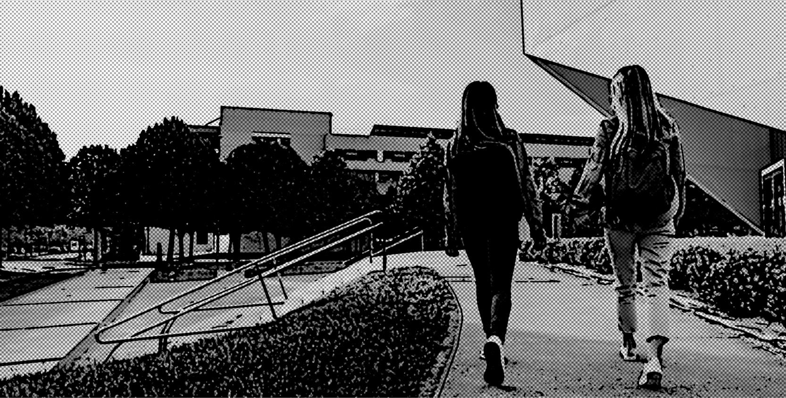
— Cris, você já se levantou? — A voz vinha lá da cozinha. — Estou
saindo. Se não estiver pronta, vai chegar atrasada de novo na escola. E olha que o
vestibular
está aí!
— Já estou quase pronta! E não precisa apelar, tá bom?
E lá vinha Cris correndo pelo corredor estreito do apartamento, ainda terminando de vestir a blusa e pegando a mochila. De fato, a última mania de todos era pegar no pé de Cris por causa do vestibular. Ela terminaria o Ensino Médio no final do ano, mas ainda não tinha a mínima ideia do que iria fazer depois.
Sempre fora bem nos estudos. Não tinha um desempenho excepcional, mas também nunca havia ficado em recuperação. Estava na média. Cris era uma garota alegre, que tinha tido muitas oportunidades na vida.
Página 10
Já havia estudado inglês, piano; tinha feito natação e agora fazia aulas de teatro e espanhol. Além disso, já tinha viajado para fora do Brasil duas vezes: para a Europa, onde conheceu a França e a Itália, e para os Estados Unidos, quando — como quase todos do seu convívio — conheceu os parques da Disney, na Flórida.
A família de Cris não era rica, mas vivia confortavelmente num apartamento de três quartos, num belo bairro de São Paulo. Sua mãe, Marília, era psicóloga e trabalhava numa clínica que dividia com duas outras colegas. O pai de Cris, Beto, era fotógrafo. Sua especialidade eram fotos da natureza, mas também aceitava outros projetos para os quais era convidado, como documentar expedições de pesquisadores nos cantos mais remotos do mundo. Lá estava uma pessoa que tinha viajado bastante na vida e que, coincidentemente, naquele exato momento estava viajando de novo.
Cris já havia se acostumado aos períodos de ausência do pai e nem reclamava muito, pois, quando ele voltava, tinha muitas histórias para contar e ficava totalmente à disposição dela para fazer o que ela quisesse.
Depois de alguns minutos presas em um pequeno congestionamento, Marília e Cris chegam à escola, atrasadas como sempre. Dali, Cris segue a rotina de se desculpar, pedir licença ao professor e se arrastar para o fundo da sala.
O cansaço de tantos anos de escola e a pressão para passar no vestibular estavam deixando Cris e vários de seus colegas sem condições de acompanhar as aulas como antes. Alternavam momentos de agitação e empolgação com desinteresse e dificuldade de concentração.
Página 11
Estavam todos ansiosos para que aquele ano terminasse logo, mas era apenas o fim do primeiro semestre.
Aquela manhã foi particularmente chata, com uma aula interminável de Biologia, em que o professor se esforçava para ensinar aos alunos a ação dos hormônios vegetais no amadurecimento dos frutos e na queda das folhas.
“Que saco!”, pensava Cris, com o olhar perdido na lousa repleta de esquemas e desenhos feitos pelo professor. Já tinha gente quase caindo de sono da cadeira, quando, finalmente, o sinal tocou, dando início ao intervalo. E, como vinha acontecendo todos os dias nos últimos meses, o assunto era o mesmo, o tal do vestibular.
— Acho que vou mesmo fazer pra Direito! Ou Medicina... — suspirou Flávia, a melhor amiga de Cris.
— Puxa, são dois cursos bem semelhantes mesmo! — ironizou Raul, namorado de Flávia.
— A questão é que estou querendo algo que me dê um futuro digno, meu filho! — respondeu Flávia, irritada.
Cris, por sua vez, vivia um dilema eterno:
— Eu ainda não sei. Às vezes fico pensando em fazer Artes Plásticas, mas também gosto de Artes Cênicas.
Raul não perdoou:
— Mas semana passada era Arquitetura, e na outra, Ciências Sociais. De qualquer jeito, vejo que você tem é uma grande vocação para passar fome!
Flávia riu e lembrou:
— É fácil se divertir com os outros, já que a sua situação é bem tranquila. Com o pai dentista, vai ser fácil fazer Odontologia e já começar a vida com um consultório montado.
Raul, finalmente com ar sério, depois de um momento de silêncio, disse:
Página 12
— Não sei se é tudo simples assim. Trabalhar é uma questão de sobrevivência, mas eu queria fazer algo de que eu gostasse realmente. Só que ainda não sei o que é.
Os três se entreolharam e suspiraram. Aqueles dias estavam mesmo complicados... Eram bons amigos e estavam sempre juntos naquela rotina de escola, shopping, cinema e, de vez em quando, alguma festinha.
Cris assistia bastante à televisão. Gostava de novelas, de filmes e de umas séries que passavam em plataformas de streaming. Eventualmente, assistia com o pai a alguns documentários sobre a natureza. Ela gostava de ver os bichos e detalhes da vida deles nas florestas, mas ficava mesmo era admirada com o deslumbramento do pai vendo aquilo. Embora já tivesse viajado por quase o mundo todo e publicado várias fotos fantásticas sobre a natureza em revistas do Brasil e do exterior, Beto ficava com os olhos fixos na tela e uma expressão emocionada enquanto assistia ao nascimento e aos primeiros passos de uma girafa ou à saída de uma borboleta de seu casulo.
Aqueles últimos dias do semestre passaram muito lentamente, até chegarem finalmente as provas bimestrais e os simulados. Cris não podia nem visitar os tios que as perguntas eram invariavelmente as mesmas:
— E então, Cris, já decidiu o que vai fazer? — perguntava a tia.
— Cuidado para não tomar uma decisão de que se arrependa e que ponha seu futuro a perder, como fez sua prima — aterrorizava o tio.
Página 13
Às vezes Cris ficava sem paciência:
— Acho que vou ser astronauta. Assim fico sozinha no espaço sem ninguém me perturbando.
Vendo isso, os pais começaram a se preocupar com o estresse de Cris. Ela precisava mesmo de um pouco de distração e fugir daquela pressão. Certa noite, no jantar, Beto anunciou que viajaria novamente dentro de poucos dias. A menina esboçou um sorriso meio sem graça, pois queria aproveitar as férias para ficar mais tempo com seu pai. “Mas ele acabou de chegar de uma viagem!”, pensou.
Beto e Marília trocaram um olhar de cumplicidade, de quem já tinha feito outros planos para as férias da filha. O pai foi direto ao ponto:
— Vou fotografar um canastra em Mato Grosso. Quer ir comigo?
Cris quase engasgou com a surpresa. Embora viajassem juntos em quase todos os períodos de férias, nunca acompanhara o pai nas viagens de trabalho, que eram sempre longas e, normalmente, no período de aulas. Aquela parecia ser uma oportunidade e tanto para fazer algo diferente e sair daquela rotina massacrante.
Recobrada do susto, abraçou os pais e confirmou, animada, sua presença na expedição:
— Tô nessa!
Página 14
2.
a canastra
Página 15
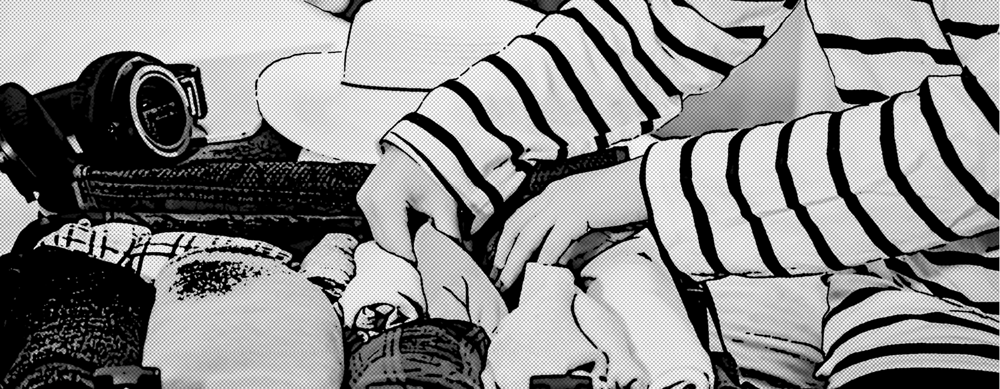
Depois de recobrar a emoção, já em seu quarto, Cris percebeu que não tinha entendido direito o que iriam fazer na viagem. Procurou Beto e disse:
— Pai, você tinha dito que iria fotografar o que mesmo? Uma canastra?
— Quase isso, filha. É um canastra, quero dizer, um tatu-canastra. É o maior tatu do mundo. Pesa uns 50 quilos! Já pensou?
Cris fez uma expressão de admiração e voltou para o quarto. Precisava começar a arrumar suas coisas para a viagem e, para isso, precisava da ajuda de seus amigos inseparáveis. Bastou um chamado e em poucos minutos Flávia e Raul já estavam em seu quarto prontos para o trabalho.
— Cara, esse tatu é pré-histórico! Sinistro mesmo, hein? — exclamava Flávia enquanto via algumas poucas imagens do bicho que tinham encontrado na internet.
Página 16
— Queria ver a cara de pânico da Cris quando ficar de frente com ele — provocava Raul.
Cris nem ouvia. Estava juntando os apetrechos para a expedição: repelente de insetos, botas, cantil, chapéu, sua câmera digital e um monte de roupas. Beto passou pelo quarto e, quando viu a bagagem da filha, brincou:
— Com esse tanto de roupas, vou ter que deixar meu equipamento fotográfico, pelo visto, não vai caber no carro.
Foi Flávia quem respondeu:
— Pode deixar, tio. Vamos reconsiderar e, talvez, tirar essa blusinha verde. Quem sabe você não compra umas roupinhas durante a viagem, Cris?
Beto e Raul riram: “Essas meninas...”.
A viagem tinha a saída marcada para a manhã seguinte, dia 5 de julho, com previsão de durar cerca de dez dias. À noite, o sono demorou para conseguir adormecer uma Cris ansiosa pelo início da aventura. Levantou logo cedo e encontrou o pai já terminando de arrumar a bagagem na caminhonete. Marília, sua mãe, lamentava não poder ir com eles, pois tinha uma série de compromissos no consultório naquele mês. Despediu-se, beijando-os e recomendando:
— Cuidado com as cobras! Vejam onde pisam!
No carro, Beto deu um mapa do Brasil para Cris:
— Você será a copiloto. Nosso destino final é este aqui — disse, apontando um pequeno município no estado de Mato Grosso.
Pelo visto, iriam viajar uma longa distância. Cris imaginava quanto tempo levariam para percorrer todas aquelas estradas, quando Beto interrompeu seus pensamentos:
— Relaxe e aproveite a paisagem. Vamos fazer umas paradas técnicas. Quero que você conheça alguns lugares por onde passei nesses anos de trabalho pelo interior deste Brasilzão.
Página 17
A garota colocou sua câmera a tiracolo. Estava planejando registrar tudo o que visse e fazer um belo álbum sobre a viagem. As paisagens realmente mereciam ser apreciadas. Após saírem da cidade, a estrada cortava florestas em um relevo montanhoso.
— Pois é, minha filha, estas áreas são das últimas remanescentes da Mata Atlântica no estado.
Cris lembrava de suas aulas de Geografia sobre a Mata Atlântica e de como ela vinha resistindo a mais de 500 anos de destruição. Sentiu um aperto no coração ao ver um trecho em que a mata fora totalmente retirada, sobrando apenas umas poucas árvores e o solo revirado.
Enquanto as horas passavam, o carro avançava pela estrada e, aos poucos, Cris pôde perceber a paisagem mudando. Viram muitas cidades, depois plantios intermináveis, especialmente de cana-de-açúcar, até começarem a aparecer trechos de uma vegetação mais baixa e mais aberta que aquela mata que haviam avistado. Cris observava a vegetação com curiosidade quando, mais uma vez, Beto adivinhou seus pensamentos e, antes que ela perguntasse, disse:
— Aqui já começamos a ver uns trechos do Cerrado. Que tal?
Cris não queria decepcionar seu pai, mas, na verdade, não achava o Cerrado bonito. As árvores eram meio tortas e a vegetação era aberta, diferente da exuberância que a mata apresentava. No fundo, tinha aprendido pouco a respeito desse bioma e, pelo que conhecia, era uma vegetação pobre e sem atrativos.
Conversaram um pouco a respeito do assunto e Beto contou vários casos interessantes sobre lugares, bichos e plantas que existiam no Cerrado.
Página 18
Cris começava a se interessar, e Beto sentenciou:
— Quanto à beleza, vou deixar para você decidir na nossa primeira parada, a Serra da Canastra.
— Serra da Canastra ou do Canastra? — quis saber Cris.
Beto riu:
— Dessa vez, é da Canastra mesmo.
Explicou que canastra é o mesmo que um grande baú, que os antigos usavam para guardar coisas. Tanto o tatu quanto a serra tinham o nome por lembrarem o formato de uma canastra. Na estrada, dava para observar, ao longe, a serra com jeito de baú.
Chegaram já de noite a uma cidade pequena com calçamento de pedras. Estavam esgotados pela viagem e foram logo a um pequeno e simpático hotel tomar uma ducha, jantar e dormir. Cris apagou assim que deitou.
Pela manhã, logo que acordou, foi até a varanda do quarto e deu de cara com uma paisagem espetacular: um morro belíssimo a poucos metros da sua janela e, a seus pés, uma mata e o barulho de um rio que passava por ali. Ainda estava admirada com aquela visão quando dois tucanos passaram voando calmamente, bem diante de seus olhos, com bicos alaranjados, quase do tamanho do corpo. Era bonito e ao mesmo tempo incrível o voo daquelas aves. Cris nunca tinha visto tucanos livres na natureza.
O dia prometia. Tomaram um delicioso café da manhã e foram conhecer o Parque Nacional da Serra da Canastra. Seguiram poucos quilômetros numa estrada de terra e pedras, cheia de curvas na subida de um morro, para acessar a entrada do parque. Era incrível como lá em cima estava bem mais frio e, em alguns lugares, a neblina não permitia que enxergassem nada muito à frente do carro.
Página 19
Por isso, seguiam bem devagar.
Com o passar da manhã e com o sol esquentando, a neblina se dissipou, e então puderam admirar as paisagens de vegetação baixa, quase que apenas campos, o relevo bem irregular e muitas rochas misturadas às plantas. Dava para enxergar, ao longe, os morros verdes cobertos de rochas de cor clara e tamanhos variados. Mais à frente, um campo bem plano, coberto por umas flores estranhas, mas belíssimas. Eram plantas com uma longa haste verde, que pareciam ter mais de um metro de altura, e, na extremidade, saíam de uma pequena base várias hastes com bolinhas brancas nas pontas, formando uma esfera. Parecia o enfeite de metal que havia na casa dos tios de Cris e com que ela costumava se divertir, segurando todas as hastes juntas e depois as soltando de uma vez para ver o movimento desordenado que faziam. Beto explicou que eram as sempre-vivas, também chamadas de “chuveirinho” ou ainda “palipalan”, e que eram plantas bem típicas daquele lugar.
Seguiram a estrada até chegarem a um local onde pararam o carro e, caminhando uns poucos metros por uma trilha de pedras, avistaram a estátua de um santo.
— Sabe que santo é esse? — perguntou Beto.
Cris fez uma expressão de dúvida. Beto, que conhecia a filha, nem esperou o chute que viria logo a seguir e continuou:
— É São Francisco, e é aqui que nasce um dos principais rios brasileiros, o rio São Francisco.
Lembraram-se de quando viajaram para o Nordeste e visitaram uma hidrelétrica que usava as águas do São Francisco.
Página 20
Cris era bem pequena, mas não se esquecera do passeio e do tanto de água que saía das comportas da represa. Agora ficava pensando em como um filetinho de água daquele poderia se transformar em um rio tão grande. Beto filosofou:
— Rios são como gente. Do nascimento até se tornarem adultos, passam por uma longa jornada em que precisam ser devidamente cuidados para terem saúde.
Cris se lembrou de uns rios muito poluídos que conhecia e ficou pensando em que tipo de “pais” nós estávamos sendo para eles.
Seguiam em direção à saída do parque, quando Beto parou o carro de repente e pediu para Cris sair em silêncio. Apontou para o horizonte, dizendo:
— Está vendo o tamanduá entre aqueles dois pequenos morros?
Ele só podia estar brincando. Por mais que se esforçasse, ela não via nada além de pedras e plantas. Mas Beto já estava com o binóculo apontado para aquela direção, dizendo:
— É isso mesmo. Acho que ele está fuçando um cupinzeiro.
Cris estava incomodada por não ver nada e pediu o binóculo. Olhou por toda a região, mas não viu nenhum tamanduá. Estava resmungando que não conseguia ver nada, mas de repente:
— Achei!
Felizmente, o tamanduá parecia longe o bastante para não se assustar. Lá estava o bicho: quando parado, parecia uma pedra ou mesmo um pedaço de tronco de árvore no chão.
Página 21
Mas de vez em quando se mexia lentamente e dava para ver, enquanto andava, seu focinho comprido e sua cauda bem peluda balançando levemente ao vento. Ficaram um bom tempo observando o tamanduá até decidirem ir embora. Precisavam seguir viagem. Cris estava satisfeita, mas, no fundo, queria ter visto aquele bicho bem de pertinho...
Páginas 22 e 23
![Imagem. Fotomontagem em preto e branco, referente às páginas 22 e 23. Ilustração de um lápis, fones de ouvido, um celular e um caderno aberto. Na folha à esquerda há as informações: 5 de julho. Fotografia de uma paisagem com vegetação. 5 de julho – Algumas paisagens na estrada. Fotografia de uma paisagem com vegetação rasteiras e árvores altas com copas pequenas. Na folha à direita há as informações: 6 de julho. Fotografia de uma paisagem com vegetação rasteira e um rio. 6 de julho – Paisagem e “flor muito legal” na Serra da Canastra. Fotografia de plantas finas e compridas disposta na extremidade de um galho. Fim da imagem.](../resources/images/image_PG_PNLD27_EM_OUTROS_500_i001.png)
Página 24
3.
festa do interior!
Página 25
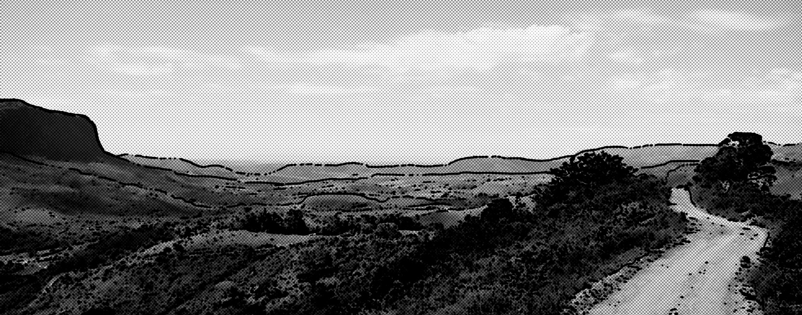
Logo cedo, retomaram a estrada. Iam deixar Minas Gerais para trás e seguir para Goiás. A próxima parada era Pirenópolis. Na mala, fotos, artesanatos e, como não podia deixar de ser, o famoso queijo mineiro.
Já se podiam admirar pelas janelas do carro as amplas paisagens do Cerrado. Eram muitos morros e vales, por onde passavam os rios acompanhados de uma floresta estreita. Beto explicou que aquele tipo de floresta se chamava mata de galeria. Ela tinha esse nome porque a mata cobria o rio em toda sua largura, formando uma verdadeira galeria para a passagem da água.
Outros lugares eram bastante planos e, às vezes, a vegetação do Cerrado vinha até o acostamento. No entanto, houve momentos em que não se via nada dos dois lados da estrada além de extensas plantações, até onde a vista alcançava.
Página 26
Cris lembrava-se dos bichos que tinha visto na Canastra e se perguntava: “Será que algum animal vive nessas plantações tão grandes?”. Poucos minutos depois, avistaram um animal morto na estrada. Beto parou no acostamento e foram ver o bicho. Era um cachorro-do-mato. Cris falou:
— Coitado. Parece uma raposinha...
Beto explicou que a raposa era mesmo muito parecida com o cachorro-do-mato. Infelizmente, eram animais atropelados com frequência em estradas no Brasil. Cris quis saber por quê. Os motivos eram variados: excesso de velocidade, falta de sinalização e de atenção dos motoristas; mas havia casos em que os atropelamentos eram propositais, especialmente em se tratando de animais menores como cobras e sapos.
Cris ficou indignada e, ao mesmo tempo, triste, quando Beto disse que os atropelamentos de animais nas estradas eram muito mais comuns do que as pessoas pensavam, e que representavam uma séria ameaça à sobrevivência deles.
O restante do dia transcorreu tranquilamente. Para distrair a filha, Beto resolveu contar um pouco sobre o folclore e as festas típicas do interior do Brasil. Falou das Congadas, que eram comemoradas em todo o Brasil, mas especialmente em uma cidade perto dali, Catalão, e que incluíam vários grupos de danças misturando influências da religião católica e da cultura africana. Pegou um álbum de fotos no porta-luvas e pediu que Cris folheasse enquanto ele falava sobre as festas.
Páginas 27 e 28
![Imagem. Fotomontagem em preto e branco, referente às páginas 27 e 28. À esquerda há ilustração de um álbum de fotos, um copo de café, fones de ouvido e um livro aberto com o texto: Fotos que meu pai tirou no ano passado: das Cavalhadas em Pirenópolis. Fotografia de uma pessoa de camisa e calça, usando uma máscara de um boi com chifres compridos repletos de flores. A pessoa está montada em um cavalo com adereços de flores. Fotografia de duas pessoas montadas em cavalos com adereços. Elas estão de costas. Ao fundo, há vegetação. À direita, ilustração de um celular, uma caneca vazia e um álbum de fotos aberto com o texto: e da procissão do Fogaréu em Goiás Velho. Fotografia de diversas pessoas segurando tochas com fogo na ponta. Fotografia de pessoas vestidas com mantos e capuzes pontudos, segurando tochas acesas. Fim da imagem.](../resources/images/image_outros_Page_029.jpg)
Página 29
As primeiras fotos mostravam pessoas a cavalo, usando máscaras que representavam cabeças de boi bastante coloridas. Eram as Cavalhadas.
A Festa do Divino Espírito Santo, que ocorre em Pirenópolis e é o principal evento do ano, acontece 50 dias depois da Semana Santa e comemora o dia em que o Espírito Santo desceu sobre os apóstolos. Além, é claro, das celebrações religiosas, há queima de fogos, música e elevação da bandeira do Divino em um mastro de mais de dez metros de altura. O ponto alto são as Cavalhadas, que representam a luta entre cristãos e mouros ocorrida na Europa, na Idade Média. Na representação, os cristãos, com belíssimos trajes azuis, sempre vencem os mouros, com trajes vermelhos igualmente elegantes. A representação da luta ocorria numa arena cercada por camarotes de madeira construídos pelas famílias mais abastadas da região, mantendo a tradição de mais de 150 anos. Depois, foi construído um estádio especialmente para o evento. As pessoas com cabeça de boi são os mascarados que, com seus cavalos igualmente enfeitados, passam todos os dias de festividade brincando com as pessoas nas ruas sem ser reconhecidos.
Cris quis saber por que comemorar algo que aconteceu na Europa há tanto tempo e por que as festas populares tinham tanta ligação com a religião. Beto disse não saber ao certo, mas a religiosidade era algo muito forte no povo brasileiro, especialmente no interior, e a nossa colonização portuguesa talvez explicasse como as cavalhadas teriam chegado ao Brasil.
Página 30
O impressionante era a força com que essa festa se manteve através dos tempos e como ela tinha incorporado características bastante locais. Na verdade, era essa a beleza e magia da cultura popular.
Nas páginas seguintes do álbum, havia fotos de pessoas com vestes coloridas e rostos cobertos por capuzes pontiagudos, empunhando tochas acesas.
— Parecem pessoas daquele filme da Ku Klux Klan! — exclamou Cris.
Ela se referia a um filme que haviam visto na TV, que falava na terrível sociedade secreta racista surgida nos Estados Unidos por volta de 1865. Esse grupo de pessoas escondia-se com aquelas vestes para perseguir as pessoas negras e todos que simpatizassem com elas, logo após a Guerra Civil estadunidense, que pôs fim à escravidão no país.
— Até parece um pouco, mas não é nada disso — riu Beto. — É outro exemplo de festa religiosa. Esses são os farricocos, que representam os guardas durante a perseguição e prisão de Jesus Cristo. Essa representação ocorre na cidade de Goiás, na quarta-feira de Trevas da Semana Santa, e se chama Procissão do Fogaréu.
O tempo passou rapidamente enquanto viam as fotos e conversavam sobre essas e outras festas e costumes do interior. Cris já pensava em tomar emprestadas algumas dessas fotos do pai para seu álbum.
O pôr do sol foi algo espetacular. O céu ficou manchado por várias tonalidades de cores que se revezavam entre amarelo, vermelho, rosa, alaranjado, azul e roxo.
Página 31
A imensidão da paisagem plana deu um toque ainda mais especial àquela visão. Cris imaginou que, se alguém pintasse um quadro daquele cenário, as pessoas diriam que estaria muito fantasioso e colorido demais para ser verdade.
Página 32
4.
a chegada
Página 33
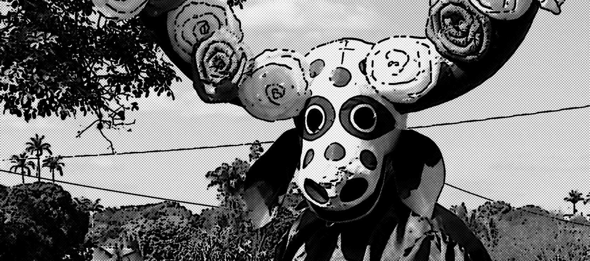
No dia seguinte, já em Pirenópolis, visitaram o museu das Cavalhadas, onde Cris pôde ver as roupas usadas pelos cavaleiros, que eram muito ornamentadas e bem-acabadas. Até a vestimenta dos cavalos era prateada, com plumas azuis ou vermelhas, dependendo do “exército” a que pertencesse. Cris não resistiu e comentou:
— Deve custar caro ser cavaleiro...
Uma senhora simpática, que tomava conta do museu, ouviu e explicou:
— Custa mesmo. Não é todo mundo que pode fazer uma roupa dessas ou ter um cavalo como o dos cavaleiros. Mas todos podem participar da festa como mascarados. Tem até horário para eles entrarem na arena da luta e aparecerem para o público.
Página 34
Conversaram mais um pouco sobre a festa e ouviram algumas das muitas histórias da cidade que havia sido fundada quase 200 anos antes. Depois almoçaram uma galinha ao molho pardo, que Cris achou deliciosa, e seguiram viagem.
Estavam entrando no último trecho de estrada até seu destino: o esperado encontro com o tatu-canastra. No caminho, Cris pôde ver belas paisagens nativas contrastando com as grandes plantações homogêneas que tinha visto em outro trecho da estrada. Beto comentou:
— Olhando assim, parece que o Cerrado ainda não está tão destruído quanto a Mata Atlântica que você viu.
“Taí uma boa notícia!”, pensou Cris. Mas logo ouviu o pior:
— Mas do jeito que as coisas estão, pode desaparecer antes dela. Apesar de a exploração do Cerrado ter começado bem depois da exploração da Mata Atlântica, ele vem sendo devastado muito rapidamente pelo crescimento das cidades e, especialmente, pelo avanço das fronteiras agrícolas, como esse que está vendo.
— Não tem outro jeito de desenvolver a região sem destruir tanto a natureza? — ela perguntou.
— Esse deve ser o grande desafio de todos, especialmente da sua geração. Certamente deve haver um jeito, caso contrário, vamos ganhar algum dinheiro com as plantações, como a soja, mas perderemos para sempre as nossas plantas originais, sem nem mesmo conhecê-las ou usá-las. Temos que pensar melhor no que exatamente entendemos como desenvolvimento, e o que os políticos chamam de crescimento do país...
A partir daí, Beto enumerou um monte de plantas do Cerrado e seus diversos potenciais: alimentos, medicamentos, madeira, óleos e tantos outros usos.
Página 35
Já estavam cruzando Mato Grosso havia algumas horas, e era quase noite quando entraram em uma estrada de terra batida. Beto anunciou que faltavam apenas uns 50 quilômetros para a casa onde iriam ficar hospedados.
Cris queria saber se o tatu-canastra existia apenas por aquelas bandas. Beto explicou que ele poderia ser encontrado em outros lugares, inclusive em alguns por onde tinham passado. Mas era um animal raro e ameaçado de extinção e naquela área havia uma quantidade considerável de tatus-canastra, o que poderia facilitar o encontro com eles. Aproveitando o momento, Beto mencionou que ali vivia um amigo que há tempos ele não via, chamado Mílton.
Algumas partes da estrada tinham muitos buracos e atoleiros. Deu para Cris perceber a utilidade da caminhonete naquele local — o carro da mãe dela jamais conseguiria passar por ali! Depois de descer do veículo algumas vezes para abrir e fechar porteiras, avistou a casa da fazenda. Mílton estava na porta:
— Pensei que não vinham mais, sô! — disse, com um sorriso.
Abraçou Beto dando-lhe fortes tapas nas costas; este, ainda se refazendo das pancadas, apresentou Cris.
— Veja, Mílton, como minha baixinha cresceu!
Mílton estendeu a mão, delicadamente, e a cumprimentou:
— Muito prazer, moça. Olha, a casa é simplesinha, mas é sua. Não faça cerimônia.
Era, de fato, uma casa bem simples. Com portas e janelas de madeira, a casa era branca, com a moldura das janelas azul, e o chão vermelho de cimento pintado.
Página 36
O teto não tinha forro, dava para ver as telhas. Cris pediu para ir ao banheiro, e achou engraçada a tranca da porta: era um pedaço retangular de madeira batido com um prego no centro que, ao ser girado, mantinha a porta fechada. Em seguida foram jantar.
— A moça precisa se alimentar direito por aqui. Pensa que não, mas vai ter que andar é muito nestes dias — sentenciou Mílton.
A comida também era simples; por sinal, estava ótima. Uma galinha ensopada, arroz, feijão, macarrão, tudo feito no fogão a lenha pela mulher do Mílton, a dona Antônia, e ainda uma salada de alface com tomate e cebola.
Mílton era um homem de mais de 50 anos, aparentando ótima saúde. Conversando com Beto, Cris soube que ele era um profundo conhecedor da região. Nascido em uma fazenda em Minas Gerais, Mílton mudara-se, jovem, para Mato Grosso, onde trabalhou por muitos anos manejando o gado para grandes produtores até conseguir comprar suas próprias terras. Como muitos por ali, tivera o hábito de caçar animais silvestres quando jovem. Mas, com o passar do tempo, foi se afeiçoando aos animais e por isso não permitia a caça na sua fazenda. Gostava especialmente dos passarinhos, para os quais colocava frutas todos os dias em poleiros no quintal. Mílton também era uma liderança local importante, sempre ouvido sobre todo tipo de assunto pelos vizinhos, que o tratavam com bastante respeito.
Já estavam terminando o jantar quando um rapaz, aparentando a mesma idade de Cris, apareceu na porta da cozinha.
— Ô, João! Até que enfim, meu filho! — exclamou Mílton.
— Lava as mãos e vem falar com o pessoal — falou dona Antônia.
Página 37
O rapaz lavou as mãos e, um tanto envergonhado, cumprimentou Beto e Cris com um simples “Prazer, João Pedro”. Depois fez um prato e sentou-se perto da porta num banquinho de madeira.
Mílton explicou:
— O João Pedro tá tentando arrumar um cercado pra botar as galinhas. Não tá dando mais pra dormirem soltas. Toda semana é a mesma ladainha: o lobo-guará pega pelo menos uma.
O rapaz confirmou, balançando a cabeça enquanto mastigava. Cris ficou curiosa com a história.
— E vocês já viram mesmo o lobo pegando as galinhas? — quis saber Beto.
— A gente não vê o bicho, ele é danado. Mas quando vai dando umas quatro pras cinco da manhã, ele vem, pega uma galinha e some. Só ficam umas penas — comentou dona Antônia
João Pedro completou:
— Outro dia, que uma galinha sumiu, o vizinho disse que viu um guará rondando pelas bandas da casa dele.
— Olha lá, vocês têm que ter provas mais concretas! Senão podem estar acusando um inocente — brincou Beto.
— Preocupa não, Beto. Você sabe que nessas terras ninguém faz mal para os bichos. Só quero proteger minhas galinhas — concluiu Mílton.
De fato, naquela localidade e em praticamente toda a região do Cerrado, o lobo-guará era visto como o mais famoso e especializado comedor de galinhas. A cultura popular guardava algumas histórias sobre essa relação. Uma das mais incríveis dizia que o lobo era capaz de hipnotizar as galinhas com o olhar e, na sua presença, mesmo empoleiradas, elas caíam no chão uma a uma, aos pés dele.
Página 38
O lobo-guará despertava mesmo um certo fascínio, talvez pelo seu tamanho e sua cor chamativa, marrom-alaranjada, mas também por ser um bicho solitário que, de vez em quando, à noite, emitia altos latidos roucos, inconfundíveis, vindos lá do Cerrado. Apesar de impor respeito aos humanos, ninguém nunca tinha ouvido falar em ataques de lobos-guarás às pessoas. Quanto às galinhas, Beto depois contou a Cris que era mesmo possível que um lobo-guará as estivesse comendo, mas também que poderiam ser vários outros animais, de gatos-do-mato e gaviões aos próprios cachorros da fazenda. Contou também que soube de um caso em que o suposto lobo era uma pessoa, que tinha se habituado a roubar galinhas e pôr a culpa no animal.
Depois do jantar, a conversa continuou na varanda. Mílton contou vários casos interessantes, alguns muito engraçados. Cris se surpreendeu com a facilidade de Mílton para conversar e prender a atenção das pessoas enquanto contava suas histórias. E como ele sabia de coisas! O assunto ficou ainda mais interessante quando ele começou a falar sobre os indígenas das redondezas.
— Índios? — surpreendeu-se Cris. — Ninguém tinha me falado que havia índios por aqui!
— O certo é indígenas, Cris, os povos originários, aqueles que estavam aqui antes dos outros — corrigiu Beto, pacientemente.
— Ora, Cris, tem sim. São os xavante. E você vai passar pertinho das terras deles amanhã mesmo.
Mílton mantinha boas relações com os xavante. Durante anos precisou passar com gado por dentro das terras indígenas. Sempre pediu licença e os tratou com muito respeito, apesar de que isto não era a regra por ali.
Página 39
Muita gente os temia, dizendo que eles eram violentos e que teriam até matado pessoas que entraram em seu território. Outros os achavam sujos e mantinham distância, fazendo comentários maldosos quando alguns deles vinham até a cidade.
— Ainda bem que o senhor vai estar com a gente no caso de encontrarmos algum índio, quero dizer, indígena — comemorou Cris, olhando para o pai e tentando disfarçar o nervosismo.
— Não há o que temer, eles não são violentos. É tudo uma questão de respeito. Além disso, nós não vamos entrar no território deles.
Página 40
5.
em busca
do canastra
Página 41

Durante a noite, quando as luzes foram apagadas, o quarto de Cris ficou numa escuridão total. Ela não conseguia ver um palmo adiante do nariz. Era uma sensação muito diferente do seu quarto na casa dos pais, que era iluminado pela luz da rua. Talvez por isso, e pela viagem cansativa, dormiu profundamente. Só se deu conta de onde estava quando o galo cantou, às quatro e meia da manhã. Voltou a dormir e ouviu uma segunda chamada do galo meia hora depois. Ela nem se incomodou, mas logo foi a vez de Beto, que já estava de pé, fazer o chamado:
— O café está na mesa!
“Mas ainda é noite!”, pensou Cris. “Parece até minha mãe com essa pressa.”
Tomaram café com leite recém-tirado da vaca, comeram pão com manteiga, e deram o queijo que haviam trazido da Serra da Canastra de presente para Mílton matar as saudades de sua terra natal.
Página 42
Prepararam lanches e outros mantimentos para levar, e também pegaram uma antiga barraca, pois passariam ao menos dois dias perambulando pela região. Naquela primeira expedição, iriam os três: Beto, Cris e João Pedro. Mílton tinha negócios a tratar na cidade, mas os levaria de jipe até um dos extremos da fazenda, de onde iniciariam a caminhada.
Durante o percurso, com o sol nascendo, Cris foi reparando nas mudanças na vegetação. Em alguns locais, o Cerrado ficava bem fechado, com muitas árvores, enquanto em outros, tão aberto que quase só havia capim. Beto explicou que o campo podia ser chamado “campo limpo”, quando só havia capim, ou “campo sujo”, se junto ao capim houvesse alguns arbustos espalhados. Cris ria sozinha: “Que nomes engraçados, não estou vendo nenhuma sujeira no campo sujo”.
Mílton mostrou uma árvore grande, de galhos muito tortuosos, carregada de frutos esverdeados e arredondados do tamanho de uma laranja pequena:
— Cris, esta árvore é o pequizeiro. Dá um fruto, o pequi, que é muito usado na comida, especialmente com arroz ou com galinha.
João Pedro fez uma careta. Mílton continuou:
— Aqui, nem nós apreciamos muito, mas em alguns lugares tem gente que lambe os beiços só de ouvir falar em pequi.
— Mas tem que cuidar com os espinhos — lembrou João Pedro.
Pararam para apanhar uns frutos no chão. O fruto do pequizeiro era muito cheiroso. Tinha uma polpa amarelada e de uma a quatro sementes grandes.
Página 43
Essas sementes é que tinham espinhos que poderiam machucar a boca se fossem mordidas por descuido. Cris gostou da árvore, era muito robusta e seu tronco era incrivelmente torcido. Parecia uma escultura moderna! As folhas, agrupadas três a três, tinham bordas que pareciam desenhadas e recortadas por alguém.
Após cerca de três horas de uma estrada muito esburacada, chegaram a uma construção antiga, já destroçada. Parecia uma pequena casa, apenas com partes das paredes em pé, definindo os espaços das portas e da janela. Não tinha nem mais teto, e o mato já crescia por todos os lados. Mílton explicou que aquele era um ponto de descanso dos vaqueiros quando transportavam o gado pela região, mas, como dava para perceber, já estava abandonado havia muito tempo.
— Venho me juntar a vocês em dois dias neste mesmo lugar, certo? Ali na frente passa um riacho e tem um bom lugar para acampar. Beto, você lembra onde fica aquela baixada em que vimos os tatus da outra vez, não é?
— Tudo tranquilo, Mílton, não precisa se preocupar — disse Beto, retirando a bagagem.
Cris quis aparentar calma, mas sentiu um frio na barriga quando o velho jipe desapareceu na curva. Ficou com o olhar perdido na estrada até ser interrompida por João Pedro:
— Então vamos deixar de moleza, né? — o rapaz limitou-se a dizer, com uma mochila grande nas costas.
João Pedro tinha 19 anos, dois a mais que Cris, e era o único filho de Mílton e dona Antônia. Nunca quis se envolver muito com os estudos. Estava acabando a duras penas o Ensino Médio, mas, ao contrário de Cris e seus amigos, nem pensava em vestibular. Havia uma faculdade em uma cidade a uns 200 quilômetros dali, mas ele não se interessava por nenhum dos cursos oferecidos.
Página 44
Sempre gostara muito de andar no mato, pescar e cuidar da fazenda. Uma vez, Mílton insistiu para que o rapaz passasse uma temporada com o tio na capital, mas João Pedro não durou nem uma semana. Pediu para voltar à fazenda, que era onde se sentia bem. Assim, ajudava seu pai com os negócios e sua mãe com a casa e com as pequenas criações de galinhas e porcos.
Andaram uns 500 metros carregando o equipamento e instalaram-se em uma área bem agradável à beira do riacho. Beto disse que iria fazer uma rápida caminhada pelas redondezas enquanto Cris deveria ajudar João Pedro a organizar o acampamento.
Lá pelas tantas, Cris tentou puxar assunto:
— Será que agora as galinhas estarão mais seguras no novo galinheiro?
João Pedro estava pensativo tentando encaixar os ferros que faziam a estrutura da barraca. Sem mudar o olhar de direção, respondeu:
— Bom mesmo era dar uns tiros nesse lobo e resolver o problema de uma vez.
Cris ficou chocada:
— Mas por quê? Você nem sabe se a culpa foi dele...
— Pois é. Fico de tocaia com a arma e, se for ele, leva chumbo.
Ela desistiu de conversar, afinal nem conhecia aquele rapaz e não queria discutir logo no primeiro dia de viagem. Mas ficou irritada com o seu jeito de pensar. “Imagine? Atirar no lobo só por causa de umas galinhas! Esse menino é mesmo esquisito: acredita em qualquer coisa, e os pobres animais é que pagam o preço das suas crenças.” Se contasse isso aos seus amigos na cidade, certamente concordariam com ela.
Página 45
Durante o resto da manhã, conversaram apenas o essencial. Quase perto do meio-dia, Beto surgiu correndo, avisando que tinha acabado de ver um tatu-canastra numa trilha bem perto dali. Os dois não pensaram duas vezes: pegaram os equipamentos e correram com ele para o local. No lugar onde Beto tinha avistado o animal, havia um enorme buraco e um monte de terra vermelha. Era o maior buraco de tatu entre os poucos que Cris já tinha visto! Ela sacou sua pequena câmera digital e já ia registrando o tal buraco quando foi interrompida.
— Espere, Cris. Para que as pessoas consigam perceber o tamanho do buraco pela foto, é importante você colocar algum objeto que possa servir de comparação — ensinou Beto, enquanto colocava seu canivete bem perto da toca do tatu.
Era impressionante o tamanho do buraco. João Pedro, que havia enfiado a cabeça no buraco com uma lanterna, disse em tom desanimado:
— Ele deve estar é longe numa hora dessas. Eita buracão fundo!
Mas Beto já tinha um plano. Iria montar o equipamento a poucos metros do buraco, protegido por uma pequena barraca camuflada. A ideia era permanecer ali do entardecer até o dia seguinte, se preciso. Cris não disse nada, mas enfim estava percebendo como era trabalhoso fazer aquelas fotos espetaculares do seu pai.
Jantaram cedo e se encaminharam para o esconderijo improvisado, aguardando o tatu. A pequena barraca era muito apertada para os três e, como tinham que ficar imóveis e sem falar nada, depois de quatro horas ninguém aguentava mais.
Página 46
Cris foi dormir. Pelo jeito, só ia ver o tatu nas fotos mesmo. Poucos minutos depois, foi a vez de João Pedro desistir. Beto só retornou horas mais tarde, já de madrugada, mas sem sucesso em ver o tatu.
Acordaram cedo com um barulho das pancadas que um pica-pau dava em uma árvore. Diferentemente do personagem do desenho animado, aquele pica-pau era pardo com a cabeça amarela. Cris ficou intrigada. “Como esse bicho bate o bico na árvore com tanta força? Será que ele não fica com dor de cabeça?”
A manhã foi dedicada a observar as aves. Viram um martim-pescador empoleirado na beira do rio e também um carcará, duas araras-canindé, soldadinho, pula-pula, joão-de-barro, joão-bobo e tantos outros pássaros que Cris até perdeu a conta. O mais intrigante foi um filhote de urutau, que só viram graças ao olho bem-treinado de Beto. A ave de cor parda estava imóvel na extremidade de um tronco seco, com a cabeça voltada para o céu. Como era da mesma cor do tronco, ficava imperceptível. Beto explicou que era um excelente disfarce, pois essas aves eram noturnas. Cris perguntou:
— E como o filhote se alimenta?
— Os pais dele devem visitá-lo à noite. Agora estão aqui por perto, mas não se arriscariam, muito menos arriscariam a vida do filhote, revelando seu esconderijo — explicou o fotógrafo.
Página 47
Os planos para aquele dia eram diferentes. Beto quis ir vigiar a toca do tatu no mesmo horário que o tinha visto no dia anterior. Cris e João Pedro se entreolharam. Não dava nem vontade de pensar em ficar imóvel, naquele lugar apertado, e ainda mais no calor do meio-dia. João Pedro propôs:
— Querendo, a Cris e eu podemos caminhar procurando outros tatus enquanto você fica na sua tocaia.
Beto riu:
— Que tocaia, João? Até parece que vou caçar o bicho!
Mas concordou com a proposta:
— Tudo bem, mas não se afastem muito e caminhem apenas pela estrada, certo?
Cris ficou aliviada. E quem sabe não davam sorte e viam mesmo outro tatu? Encheu um cantil com água, pegou um pacote de bolachas e colocou sua câmera e o binóculo a tiracolo. João Pedro apenas pegou sua capanga e pendurou no ombro. Antes de saírem, ela ainda brincou com o pai:
— Vamos apostar em quem faz a melhor foto do tatu?
Página 48
6.
seguindo
as seriemas
Página 49
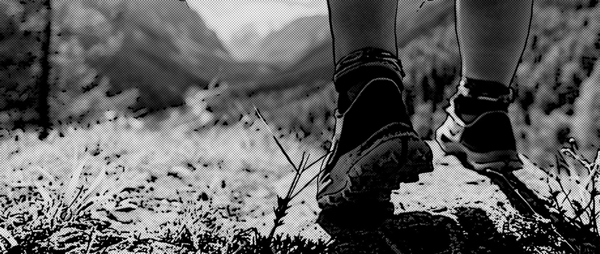
O rapaz falava pouco, de fato. E Cris, que falava muito, após meia hora de caminhada, não se conteve:
— Nossa, Pedro! Sua voz está me incomodando. Quer parar de pensar?
João Pedro achou graça:
— O que você quer que eu fale?
— Não sei, deixa eu ver... me fale dessas plantas. Meu pai me disse que no Cerrado existem muitas plantas medicinais.
Sem querer, Cris havia acertado em cheio. Ali estava um assunto de que ele gostava, pois sempre acompanhava sua mãe nas coletas que fazia para sua farmácia caseira. Dona Antônia se orgulhava em dizer que, na sua família, ninguém nunca tinha ido ao médico. Havia plantas para curar todos os problemas de saúde. João Pedro começou imediatamente a mostrar uma série de plantas.
Página 50
— Tá vendo essa árvore? É a sucupira. Ela dá esse frutinho seco que a gente usa para curar problemas respiratórios.
Cris também gostou da planta. Tinha um tronco claro e umas folhinhas miúdas que contrastavam com o tamanhão da árvore.
A partir dali, João Pedro desatou a falar. Mostrou o barbatimão e o para-tudo. Falou também da carqueja, da pacari e de uma infinidade de plantas. Cris ficou impressionada: “Parece que todas as plantas têm algum poder para fazermos remédios!”.
Passaram um bom tempo caminhando e conversando sobre as plantas. Às vezes, João Pedro avistava uma nova planta e corria em sua direção, desviando completamente da estrada, entrando no Cerrado, descendo e subindo pequenos morros. De repente, duas seriemas atravessaram correndo à frente deles. Com um sorriso maroto, João Pedro propôs:
— Vamos atrás delas?
Apesar do absurdo da proposta, Cris achou graça e topou a brincadeira. Tentaram seguir as seriemas que andavam rapidamente com seu jeito bastante desengonçado. Ficaram um pouco parados, tentando não chamar a atenção dos bichos. Depois, correram na direção das aves, mas quando chegaram muito perto, elas alçaram um voo curto, descendo adiante e sumindo da vista dos dois. Cansados, resolveram parar e descansar um pouco. Cris deu um gole da água do cantil e abriu o pacote de bolachas. Ficaram comendo em silêncio, admirando a paisagem.
O silêncio foi interrompido por um trovão. De fato, o céu sobre a cabeça deles estava muito escuro e a chuva não tardaria a despencar.
Página 51
E não tardou mesmo. A chuva caiu com muita violência e os dois foram obrigados a correr para buscar abrigo. Demoraram um pouco até achar uma formação de rochas com uma fenda onde se esconderam. Estavam completamente encharcados.
A tempestade durou um bom tempo e, quando finalmente passou, já estava começando a escurecer. Não havia nenhum sinal da estrada e muito menos de luz do acampamento, que devia estar muito longe.
Como não tinham levado as lanternas, os dois resolveram se acomodar como podiam e dormir por ali mesmo. Cris estava um pouco assustada e preocupada com o que seu pai poderia pensar. João Pedro tentou consolá-la:
— Ao menos meu pai já deve ter chegado, ele vai acalmar o Beto. Logo que amanhecer, voltamos para o acampamento.
A noite entre aquelas rochas e com o frio aumentado pelas roupas molhadas não foi das mais agradáveis. Ainda assim conseguiram descansar um pouco. No dia seguinte, acordaram cedo. Cris notou que João Pedro estava pensativo, olhando o local à sua volta. Teve um pressentimento ruim, mas resolveu ficar calada.
Comeram o resto das bolachas e partiram. Caminharam em silêncio por grande parte do dia. Já sentindo fome e uma certa angústia, Cris resolveu arriscar:
— Pedro, não há nenhuma possibilidade de estarmos perdidos, né?
Pela primeira vez, João Pedro mostrou-se irritado.
— É claro que não estamos perdidos! — disse secamente. Mas, em silêncio, resmungou em pensamento: “Estas pessoas da cidade são mesmo todas iguais: não confiam em ninguém e têm medo de tudo. Precisamos achar logo o tal tatu para acabar com esse passeio de uma vez!”.
Página 52
Apesar da demonstração de segurança, na verdade, João Pedro estava mesmo um tanto desorientado. A conversa sobre plantas, a chuva e a corrida com as seriemas certamente o haviam distraído e o fizeram sair do caminho combinado. Aquele lugar não era totalmente estranho, mas fazia muito tempo que ele não passava por ali. Só tinha andado por aquelas bandas quando garoto e na companhia de seu pai. Por isso mesmo o rapaz estava angustiado.
Um silêncio massacrante tomava conta da caminhada. Dava para ouvir apenas o som das passadas dos dois. Depois de um tempo, arrependido de sua atitude, João Pedro tentou amenizar a situação puxando conversa:
— Sabia que o primeiro contato pacífico dos xavante com os brancos foi só há uns 70 anos?
Cris ficou meio desconfiada após tanto tempo naquele silêncio estranho, mas resolveu fazer as pazes e continuar a conversa.
— Quem te disse isso?
— Meu pai. Ele conhece alguns, do tempo em que passava pelas terras deles. Eu é que nunca estive na aldeia, só vejo os xavante na cidade. Uma vez, um deles veio falar com meu pai, isso já faz tempo, eu era um molequinho, mas eu fiquei só olhando.
— E o que eles vão fazer na cidade?
— Ora, o mesmo que todo mundo. Comprar coisas, comida. Mas alguns vão beber nos bares e jogar sinuca. É o fim da picada, não é?
— Está parecendo que você não gosta muito deles...
Página 53
— Não gosto nem desgosto. Quero distância. Eles lá e eu aqui. Sei lá do que eles são capazes. Se nos pegam aqui, não quero nem pensar...
João Pedro percebeu imediatamente que havia falado demais. Pensou em dizer algo para consertar a situação, mas já era tarde.
— Como assim “se nos pegam aqui”? Nós estamos em território xavante? — Cris quase gritou, apavorada.
— Calma, eu já ia te explicar. Achei que se a gente pegasse um atalho...
— Que atalho? Vamos voltar imediatamente! — ordenou Cris, agora literalmente gritando.
— Ô, lá vem você de novo dando ordem. Ê povinho mandão!
Foram interrompidos pelo barulho de alguém pisando em folhas secas. Com o coração disparado, viraram ao mesmo tempo na direção do som e deram de cara com um jovem indígena olhando fixamente para eles.
Páginas 54 e 55
![Imagem. Fotomontagem em preto e branco, referente às páginas 54 e 55. Ilustração de uma caneta, fones de ouvido e um caderno aberto. Na folha à esquerda há as informações: 9 de julho. Fotografia de uma árvore com galhos tortos e folhas pequenas. Fotografia com destaque para três folhas ovais e compridas. 9 de julho – O pequi. Muito louco! E muito lindo também. Na folha à direita há as informações: 9 e 10 de julho. Fotografia de um buraco no chão de terra. 9 de julho – Buraco do tatu-canastra. Caraca! Fotografia de frutos ovais e claros; e um galho com folhas compridas e arredondadas. 10 de julho – Frutinhos e folha da sucupira. Fim da imagem.](../resources/images/image_PG_PNLD27_EM_OUTROS_500_i004.png)
Página 56
7.
Quando
os warazu
encontram
os
a’uwê
Página 57
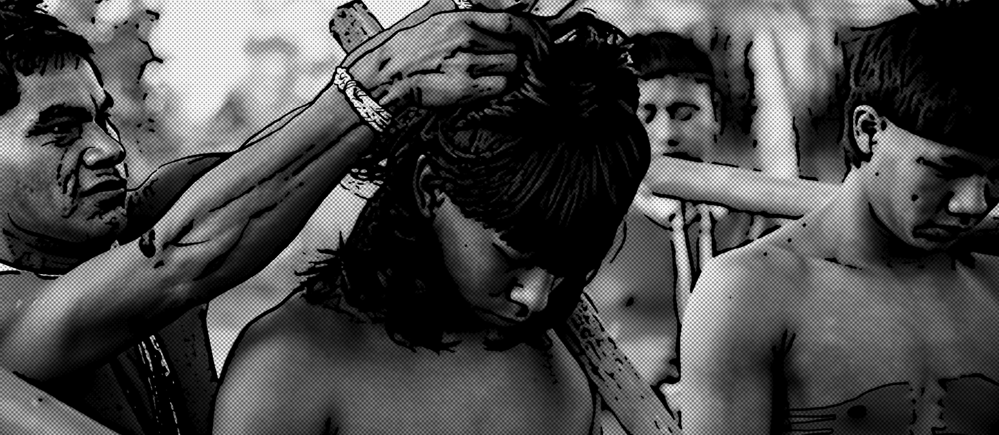
Cris estava desorientada. Mesmo muito assustada, tentou se comunicar:
— Olha, calma aí, tudo bem? Nós já estávamos
saindo...
João Pedro pôs a mão na testa: “Ai, agora ela vai conseguir piorar as coisas!”.
O garoto continuou olhando para os dois, sem sair do lugar em que estava e sem dizer nenhuma palavra. Cris insistiu, agora usando uma tática ultrapassada, fazendo mímicas incompreensíveis:
— Eu, Cris. Ele, Pedro... Somos de paz!
João Pedro achou aquilo ridículo, mas ele também estava assustado e tampouco sabia o que fazer naquela situação. Pôs as mãos no rosto, deixando uma fresta entre os dedos para ver se o rapaz teria alguma reação.
Página 58
Após alguns intermináveis segundos de silêncio, o jovem indígena perguntou calmamente:
— O que os warazu fazem por aqui?
Cris sentiu um alívio enorme:
— Como é? Você fala português? Ah, que bom! Desculpe, o que você perguntou mesmo?
— Eu perguntei o que vocês fazem no meio de nossas terras.
João Pedro não disse nada.
— Estamos um pouco perdidos — disse Cris.
Foi a vez de João Pedro, curioso, dizer algo:
— Que nome é esse que você nos chamou?
— Warazu é como chamamos as pessoas brancas como vocês. Nós somos a’uwê, que vocês chamam de xavante — respondeu o rapaz, aparentando tranquilidade e falando um ótimo português.
— Que bom que você não vai nos matar! Nem bater ou atirar uma flecha... — Cris tentou descontrair o ambiente.
O jovem indígena sorriu:
— Eu mesmo não. Mas não é seguro vocês ficarem andando por aqui desse jeito. É melhor me acompanharem até a aldeia.
O rapaz disse se chamar Paulo. Tinha um sobrenome xavante, mas Cris e João Pedro não conseguiram o pronunciar. Paulo era jovem como eles, um pouco mais baixo que João Pedro e tinha a pele queimada de sol; o cabelo, liso e bem preto, era comprido atrás, com uma franja curta e as orelhas perfuradas por brincos cilíndricos feitos de madeira. Cris o achou bonito, com olhos negros e feições suaves. Para a maneira estereotipada como João Pedro via os indígenas, Paulo parecia bem “civilizado”. Apesar de não conversarem mais nada, o jovem parecia simpático e os dois se sentiram, de certa forma, à vontade com ele.
Página 59
Mesmo assim, queriam mesmo era voltar urgentemente para o acampamento.
Seguiram em silêncio por quase uma hora, quando Cris interrompeu:
— Ainda falta muito? Não teria sido melhor você ter nos guiado para fora das suas terras? Não queríamos dar trabalho e...
Nem foi necessário continuar. Já era possível observar, ao longe, as casas que formavam a aldeia. Cris e João Pedro se entreolharam, apreensivos. Continuaram a andar e, em alguns minutos, entraram na aldeia, sob os olhares atentos de homens, mulheres e crianças, que já os haviam percebido de longe.
Paulo os levou direto para a frente de uma das casas e pediu:
— Fiquem por aqui. Vou falar com o cacique.
Os dois obedeceram. Logo vieram mulheres e, especialmente, crianças para ver quem eram os visitantes. As crianças davam risadas e tocavam neles e nas roupas. Interessaram-se pelo cantil, pelo binóculo, pela câmera fotográfica de Cris e pela capanga de João Pedro. As mulheres olhavam e conversavam entre si, também rindo de vez em quando. Certamente estavam falando deles, mas o que diziam em xavante era incompreensível para Cris e João Pedro, que se limitavam a sorrir, um tanto constrangidos.
Não demorou muito, Paulo retornou. “Até que enfim”, pensaram os dois, pois as crianças já estavam ficando agitadas demais com a novidade dos visitantes.
— A situação de vocês será discutida ao final da tarde, no warã. Por enquanto, fiquem aqui por perto da minha casa, para evitar problemas.
Página 60
— O que é esse warã? — quis saber João Pedro.
— É a reunião diária do conselho dos velhos. É lá que são discutidas todas as questões de interesse da aldeia — explicou Paulo.
— Eu posso ir e explicar por que a gente está aqui? — perguntou Cris.
— Não dá. Mulheres não participam do warã.
Cris fez uma cara de quem se conformou com a resposta, mas, no fundo, estava indignada: “Êta mundo machista!”.
Página 61
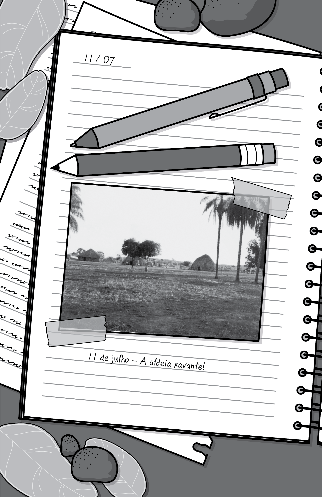
Página 62
8.
na aldeia
Página 63
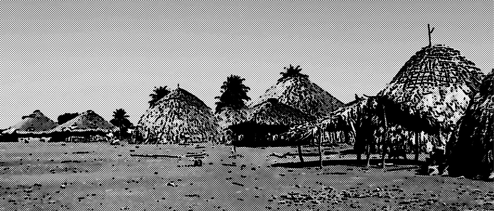
Cris achou a casa de Paulo curiosa. Parecia um iglu, só que mais alta e feita de palha. Depois saberia que a palha vinha das folhas secas do buriti, uma palmeira que tinha muitas utilidades para aquele povo. A armação era feita de troncos finos fincados no chão, formando um grande círculo e unindo-se num único ponto no centro do teto, apoiado por um tronco central mais robusto. Havia troncos também no plano horizontal, dando firmeza à construção. Por fim, tudo isso era coberto por folhas secas de buriti amarradas à armação, com espaço para uma entrada e uma ou mais janelas. Dentro da casa, encontraram mais simplicidade ainda. Havia dois quartos, separados por divisórias também de palha, esteiras e algumas belas bolsas de palha trançada penduradas nas paredes. Em um dos quartos, a surpresa: um rádio, cadernos e livros!
Página 64
De repente, apareceu na porta uma mulher indígena bastante jovem, carregando uma criança. Ela foi muito simpática e identificou-se como esposa de Paulo.
— Nossa! A turma aqui não perde tempo, hein? — sussurrou João Pedro perto do ouvido de Cris, brincando.
— Quieto, Pedro! Quer complicar ainda mais nossa vida? — disse Cris, com os dentes cerrados, enquanto passava o dedo indicador pelo pescoço, simulando uma degola.
A jovem perguntou se tinham fome. Eles responderam que sim. Ela ofereceu café, umas bolachas e um pouco de carne. Os dois aceitaram prontamente e começaram a devorar o lanche.
— Hum, está ótima! É carne de quê? — perguntou Cris, querendo mostrar-se simpática.
— De veado. Meu tio matou dois ontem e nos deixou um pouco — respondeu a jovem.
Cris arregalou os olhos, mas continuou comendo. Não queria ofender ninguém.
Após o lanche, os dois agradeceram e perguntaram se podiam dar um passeio curto pela aldeia. A moça concordou, mas pediu que não se afastassem muito da casa dela nem se aproximassem demais das casas dos outros.
— Que absurdo! Comi carne de um pobre veado indefeso! Como eles podem fazer isso? Matar o coitadinho... — lamuriou-se Cris.
— Ora, Cris! O que é que você queria? Que eles fossem ao açougue só por sua causa?
— Sei lá, Pedro, esse tipo de veado pode estar ameaçado de extinção! — inventou Cris.
João Pedro a olhou com algum desprezo:
— Se dependesse de você, ninguém matava nenhum bicho!
Página 65
Mas você gosta de comer carne, não gosta? E acha que ela vem de onde? Você devia saber que não é porque você comprou a carne no supermercado que nenhum bicho morreu. Para ter carne na sua mesa, tem que ter boi, pasto e tem que matar o boi.
Cris apenas ouvia enquanto ele continuava a falar:
— Antes de meu pai proibir a caça na fazenda, era só animal aparecer pra ser morto. E, se quer saber, eu bem que gostava de uma caçada. Taí um costume bão dos xavante.
E seguiu narrando histórias que seu pai contava. Segundo ele, os indígenas aproveitavam tudo dos animais caçados, comiam até os miolos. Cris não perdeu a oportunidade para implicar com João Pedro:
— Nisso eles são bem melhores que “alguns” de nós, que matam só por matar.
Ele preferiu ficar calado e encerrar a conversa. Cris gostava de não se mostrar vencida nas discussões, mas ficou pensando nos argumentos de João Pedro sobre a vida da cidade. Lá as coisas eram mesmo bem mais fáceis no dia a dia do que na fazenda ou naquela aldeia: a água vinha da torneira e a comida estava disponível na geladeira. Além disso, o lixo desaparecia de casa logo que o caminhão o recolhia e o levava “sabe lá pra onde”. Desse jeito as pessoas não paravam para pensar em problemas importantes para a sobrevivência, como a qualidade dos rios, a produção de alimentos e o destino do lixo e do esgoto. De vez em quando, Cris via algo sobre isso em reportagens na televisão, mas logo esquecia esses assuntos.
Enquanto pensava nisso, continuavam a andar em silêncio. A aldeia era composta por umas 20 casas como a de Paulo, dispostas num grande semicírculo. No centro, um enorme pátio de terra batida e, debaixo de algumas árvores, um grupo de pessoas estava reunido.
Página 66
Aquilo devia ser o warã! Ao avistar a reunião, resolveram voltar de imediato.
Cerca de uma hora depois, Paulo surgiu com uma feição de decepção.
— E então? — perguntaram ao mesmo tempo Cris e João Pedro.
— O conselho decidiu que vocês poderão partir em breve. Só tem um probleminha...
— Qual? — perguntaram juntos de novo, agora visivelmente preocupados.
— Eu terei que guiá-los e serei responsável por vocês enquanto estiverem por aqui.
Paulo não tinha gostado nada da ideia. Era filho do cacique, e havia tido a oportunidade de estudar até concluir o Ensino Médio. Agora estava se preparando para os exames para entrar na universidade; pensava em ser professor. Ele achava importante desenvolver uma forma de alfabetizar as pessoas da aldeia tanto em português como na língua xavante. Era um desafio fundamental para a manutenção da cultura do seu povo, sem deixar de usufruir de alguns benefícios do contato com os warazu. Aliás, essa ainda era uma questão polêmica na aldeia. Alguns defendiam uma maior abertura para o contato com os brancos, tanto por meio do uso de equipamentos, como armas de fogo e carros, quanto pelas possibilidades de os jovens saírem da aldeia para estudar. Outros temiam que essas atitudes acelerassem o processo de perda da cultura xavante. De fato, muitos jovens já não se interessavam muito pelas tradições e estavam perdendo o vigor e a prática em caçar. Poucos sabiam rastrear animais e a habilidade para manusear o arco e flecha tinha diminuído bastante.
Página 67
A presença da cultura dos warazu entre os a’uwê era evidente: muitos usavam apenas armas de fogo para caçar, nem todos usavam o corte de cabelo tradicional e os jovens queriam se vestir como os brancos. Mas o pior eram os vícios do fumo e do álcool, que tinham atingido em cheio alguns indígenas. Por isso tudo, apesar de conhecer a cultura dos brancos, Paulo não queria muito envolvimento com eles. Mas tinha de se curvar às ordens superiores.
— E então, partimos amanhã cedo? — animou-se Cris.
Paulo foi bastante incisivo:
— Não, amanhã não dá. Tenho dois compromissos muito importantes. Terão que esperar até o outro dia.
— O que você vai fazer amanhã? — quis saber Cris, entre decepcionada e curiosa.
— O uiwede e futebol.
Página 68
9.
o uiwede
Página 69
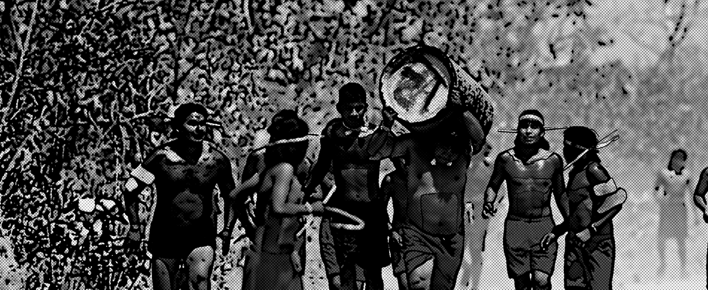
— Essa é demais! Vocês jogam futebol? — perguntou João Pedro.
— Claro! Temos um campeonato com as aldeias vizinhas e precisamos treinar.
Na caminhada que fizeram pela aldeia, Cris e João Pedro não repararam, mas no pátio central havia duas traves, delimitando o campo de jogo.
— E o que é o uiwede? — interessou-se Cris.
— É a nossa corrida tradicional. Amanhã iremos competir com a aldeia vizinha. Eles perderam da última vez e estão querendo outra chance — contou Paulo, sem disfarçar o orgulho por aquela vitória.
— Qual a distância da corrida? — perguntou João
Pedro.
— Quase 2 quilômetros.
Página 70
— Olha, esse percurso eu aguento correr bem. É capaz de eu vencer essa corrida para vocês acabarem com essa briguinha.
Paulo o olhou com desdém:
— Não duvido que você corra esse trecho. Quero ver é fazer isso carregando um pedaço de tronco de buriti nos ombros!
— O quê? — duvidou João Pedro.
— Ora, uiwede é o que vocês chamam de buriti, e é o nome da corrida também.
— Não acredito... — resmungou Cris.
— Então amanhã vocês vão ver — sorriu Paulo, enigmático.
A noite transcorreu tranquila. Cris e João Pedro, embora pensando na preocupação dos pais, dormiram profundamente. É engraçado, mas sentiram-se confortáveis naquele “iglu de palha”, especialmente depois do modo como haviam passado a noite anterior. De manhãzinha, alguns poucos raios de sol penetraram por entre frestas nas paredes. Logo Paulo se levantou e dava para ouvir a esposa dele conversando algo com a criança. A língua era completamente estranha, mas era como se desse para entender as palavras carinhosas da mãe com o filho.
Em pouco tempo os indígenas começaram a reunir-se no pátio central. Estavam animados e conversavam enquanto pintavam uns aos outros. Trajavam calções vermelhos, com alguns adereços feitos de uma espécie de corda nos pulsos e tornozelos. A pintura no rosto era discreta, com estreitas faixas vermelhas e pretas próximas à franja, cobrindo também parte do cabelo.
Página 71
Já no corpo, a tinta era distribuída abundantemente. Eles se pintavam de preto e vermelho e alguns faziam desenhos nos braços, nas costas e no peito.
De repente veio chegando, já correndo, a equipe da outra aldeia. Também estavam pintados, mas os calções eram verdes. Chegaram dando gritos fortes e agudos. A equipe vermelha não ficou atrás. Reunindo-se em um círculo, um deles falou, parecendo um tipo de técnico, e todos deram gritos ainda mais altos. Paulo era um dos mais animados.
Os dois “técnicos” conversaram e depois os demais se distribuíram pela aldeia. Seria uma espécie de revezamento, em que cada jovem correria cerca de 200 metros carregando a tora de buriti, quando a passaria para outro membro da mesma equipe. Nesse momento, chegaram as tais toras. Elas foram colocadas aos pés dos competidores que iniciariam a corrida, próximo de onde estavam Cris e João Pedro, que se limitou a colocar a mão na boca e balbuciar: “Nossa...”. Depois descobriram que cada tora pesava cerca de 80 quilos!
A largada foi dada. Os meninos corriam numa velocidade impressionante, cada um carregando a tora apoiada sobre um dos ombros. A passagem do buriti de um para o outro era igualmente impressionante, pois faziam isso muito rápido, como se fosse um bastão das corridas de revezamento nos jogos olímpicos, só que rolando a tora do ombro de um ao ombro do próximo a carregá-la. João Pedro já tinha concluído que perderia a disputa mesmo se fosse correndo sem carregar nada. A corrida permanecia empatada e os competidores já estavam completando a volta na aldeia.
Página 72
Próximo à reta final, a equipe local conseguiu abrir uma pequena vantagem e cruzou a linha de chegada bem em frente a Cris e João Pedro, uns poucos passos antes da equipe visitante. Foi uma gritaria geral! A equipe vermelha já começava uma dança e uma cantoria quando a equipe verde começou a ir embora. Os técnicos conversavam e parecia que já estavam acertando a próxima revanche daquela competição que, pelo jeito, era mesmo interminável.
Logo Paulo aproximou-se, eufórico:
— O que acharam?
— Acho que eu não conseguiria nem levantar direito o tal buriti — respondeu João Pedro, admirado.
Cris deu parabéns a Paulo, mas como ainda estava intrigada porque achava a sociedade xavante machista, aproveitou para questionar:
— Por que as mulheres não correm também?
Para sua surpresa, Paulo respondeu:
— Correm sim, mas em uma competição separada. Vai ser semana que vem.
João Pedro finalmente tentou ser simpático:
— Então, esses aí sempre perdem para vocês, não é?
— Somente no uiwede. No futebol, somos nós que perdemos, por isso precisamos treinar hoje à tarde.
E, meio sem saber por que, Paulo retribuiu a simpatia:
— Se quiser, pode vir jogar com a gente.
João Pedro concordou dando um leve aceno com a cabeça.
Naquele dia, os três conversaram bastante enquanto caminhavam por toda a aldeia. Quando passaram por uma casa em construção, Paulo falou sobre o casamento. Explicou que as mulheres trabalhavam muito na construção das casas e os parentes do noivo o auxiliavam numa caça comemorativa que durava dias ou até semanas.
Página 73
O método de caça empregado pelos xavante chamou a atenção de Cris e João Pedro. Os indígenas selecionavam um local e ateavam fogo num enorme círculo, obrigando os animais, assustados, a fugirem na direção deles, e então os abatiam.
— Mas isso não é meio exagerado? Desse jeito, devem morrer muitos animais, não? — questionou Cris.
Paulo argumentou prontamente:
— Não. Sempre fizemos assim. É uma de nossas tradições mais fortes, sabemos como cuidar do nosso território.
De fato, além da caça, os xavante, como outros povos indígenas do Cerrado, utilizam o fogo há séculos para fazer suas roças e ritos culturais. O modo como manejam o fogo acaba por evitar os grandes incêndios, tão prejudiciais e frequentes no Cerrado.
Paulo sempre defendia o respeito à cultura de seu povo, pois preocupava-se com o fato de os jovens estarem cada vez mais desinteressados pela cultura xavante. Mas os atrativos da cultura do homem branco eram muitos e, inúmeras vezes, ele mesmo ficava dividido entre as coisas boas dos brancos e os problemas que esses hábitos de vida causavam ao seu povo.
Naquele dia, ainda conversaram sobre muitas outras coisas: os rituais de emancipação dos meninos, a habilidade das mulheres para tecer bolsas a partir de folhas de buriti e vários aspectos da cultura xavante que estavam deixando Cris e João Pedro fascinados. Paulo estava reticente, mas, no seu íntimo, estava gostando do interesse que aqueles warazu demonstravam pela cultura de seu povo.
Páginas 74 e 75

Página 76
10.
no rastro
dos
nossos bichos
Página 77
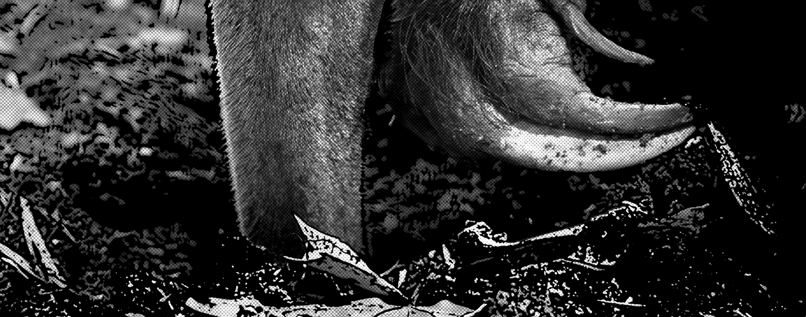
Ao final da tarde, realizou-se o esperado jogo de futebol. Para
quem, como João Pedro, estava esperando uma pelada comum, jogada de pés descalços e com
bola de plástico, foi uma surpresa ver dois times aparecerem devidamente uniformizados,
com chuteiras, bola oficial e
até juiz.
Cris decidiu dar um passeio até o rio nos fundos da aldeia. Não tinha o mínimo interesse por futebol.
O jogo foi meio truculento, parecendo futebol de várzea, com os
típicos chutões para todas as direções. João Pedro, que jogou de botinas, não foi
destaque, mas também não comprometeu o minguado empate de um
a um.
— E então, como foi o jogo? — perguntou Cris ao encontrá-los, mais tarde, diante da casa de Paulo.
Página 78
— Não foi ruim. Mas esse juiz esqueceu todos os cartões em casa! — explicou João Pedro, mostrando as canelas roxas pelas pancadas que levou.
Essa seria a segunda noite que passariam na aldeia. Antes de dormir, novamente Cris pensou em seu pai e na preocupação que ele deveria estar sentindo. Torceu para que seu Mílton o estivesse acalmando e para que tudo terminasse logo, de preferência no dia seguinte. Apesar desses sentimentos, não podia deixar de ficar fascinada com a experiência que estava vivendo, e mal podia esperar para contar tudo a Flávia e Raul. Certamente iam ficar de boca aberta...
Pela manhã, logo cedo, Paulo e João Pedro faziam os últimos preparativos para a caminhada de volta quando sentiram a falta de Cris. Procuraram em casa e nos arredores, e nada. Foram até o rio, e nada também. Já estavam ficando preocupados, quando voltaram e deram de cara com ela diante de uma casa e conversando animada com uma família da aldeia. Cris mostrava o binóculo às crianças, que estavam entusiasmadas com a possibilidade de ver as coisas tão de perto. Ficavam tentando focar os periquitos que lotavam uma grande árvore em frente. Quando viu os dois rapazes aproximarem-se, ela se despediu, mas antes tirou uma foto da família reunida na entrada da casa.
— Mas você é folgada, hein! — disse João Pedro, um tanto admirado.
— Como conseguiram se entender? — perguntou Paulo, curioso.
— Ahn, é segredo. Não posso revelar a vocês, que são homens. Essas são algumas capacidades especiais das mulheres. Vocês nem compreenderiam... — esnobou Cris.
Página 79
Paulo e João Pedro se entreolharam e cada um fez uma careta em desaprovação à brincadeira de Cris.
Antes de saírem, o cacique veio conversar com eles. Muito simpático, perguntou se tinham sido bem tratados. João Pedro agradeceu a hospitalidade e Cris também expressou sua gratidão. Ela recebeu uma bela cesta de palha de buriti, e João Pedro ganhou uma gravata xavante, que era feita de um tipo de corda com as pontas macias, do comprimento necessário para dar uma volta no pescoço. O nó era dado na frente e, atrás, como que espetada na nuca, ficava uma pena. A dele era uma pena preta e branca, de carcará.
Juntaram os equipamentos e deram início à caminhada. Não seria difícil encontrar o caminho de volta até o acampamento, pois Paulo conhecia a tal casa abandonada onde Mílton tinha deixado os dois. À medida que atravessavam pela aldeia, respondiam com um aceno às pessoas que os observavam com interesse da porta de suas casas.
Seguiram uma trilha que passava por uma vegetação bem aberta, com o capim na altura dos joelhos. De vez em quando, avistavam grupos de palmeiras — o buriti, tão usado pelos xavante. O solo era bem escuro e, em alguns lugares, bastante encharcado. Já haviam caminhado por quase duas horas quando Paulo parou, olhou para o chão e abaixou-se para ver de perto algo em meio ao capim. Depois, levantou-se e recomeçou a andar, agora olhando para o chão.
— O que foi? — perguntou Cris.
Ele voltou e explicou:
— Estão vendo esta parte com capim amassado? Um tamanduá se deitou aí. Depois veio andando por aqui. Não faz muito tempo, foi hoje de manhã.
Página 80
João Pedro desconfiou que Paulo estivesse inventando aquilo para impressioná-los:
— E onde estão as pegadas?
Paulo mostrou umas marcas quase apagadas no chão escuro. Eram como se alguém tivesse raspado levemente o chão com os punhos.
— E isso é pegada? Cadê os dedos? — insistiu João Pedro.
A explicação dada foi a de que os dedos são vistos nas pegadas das patas traseiras. O tamanduá andava com as patas da frente curvadas para dentro, apoiando-se nos punhos. Isto acontecia porque tinha garras muito grandes e curvadas, que usava para abrir os cupinzeiros e formigueiros.
— Vamos tentar segui-lo? — convidou Paulo, que era um dos poucos jovens da aldeia que tinha se interessado por aprender as técnicas para rastrear animais e, sempre que tinha oportunidade, queria testar sua própria capacidade.
Os dois toparam, apesar da descrença de João Pedro. Cris tinha ficado com grande vontade de ver um tamanduá-bandeira de pertinho desde o dia em que vira aquele pelo binóculo na Serra da Canastra. Seguiram Paulo, que ia andando não muito devagar, mas por um caminho meio tortuoso. Ia para um lado, contornava uma árvore, voltava pelo outro lado, sempre olhando para o chão. Cris e João Pedro o acompanhavam, mantendo uma certa distância para não atrapalhá-lo. Cerca de uma hora depois, Paulo parou de repente. Levantou a cabeça, cheirou o ar e olhou para os lados procurando algo. Cris, que estava um pouco para trás, falou alto:
— Ele está por aqui?
Página 81
Imediatamente Paulo levou o dedo à boca pedindo silêncio e apontou discretamente para o lado direito de Cris. Os dois viraram e deram de cara com um lobo-guará que os observava a uns 20 metros de distância. O bicho era muito elegante. Alto, esguio, com a pelagem em tons de marrom-alaranjado e uma crina preta, o lobo não parecia assustado com a presença deles, e ficou os observando por um tempo. Pelo tamanho, parecia um animal ainda jovem. Depois abaixou a cabeça, deu uns passos para o lado e tornou a olhar. Apesar do porte imponente, tinha uma cara de cachorro manso, com orelhas grandes e olhos expressivos. Finalmente, virou de costas e começou a andar. Ainda parou mais uma vez e olhou para trás antes de desaparecer calmamente na vegetação mais densa.
Os três estavam imóveis e com os olhos brilhando. Mesmo João Pedro, que já tinha visto o lobo na natureza, nunca o tinha visto tão de perto e por tanto tempo. Ainda assim, não perdeu a chance de provocar Paulo:
— Legal esse teu tamanduá, hein?
Cris não conteve o riso. Paulo ficou sério. Olhou para os dois, depois limitou-se a pegar um galho seco, quebrar um pedaço e fincá-lo no chão no local onde estavam. Então retomou a caminhada da mesma forma que antes, sempre olhando para baixo. João Pedro ainda ria quando chegou perto do galho, e imediatamente ficou quieto e recomeçou a andar. Cris aproximou-se e também pôde ver, ao lado das marcas deixadas pelos pés de Paulo e do rastro do tamanduá, as pegadas do lobo-guará.
Páginas 82 e 83

Página 84
11.
de noite
no
Cerrado
Página 85
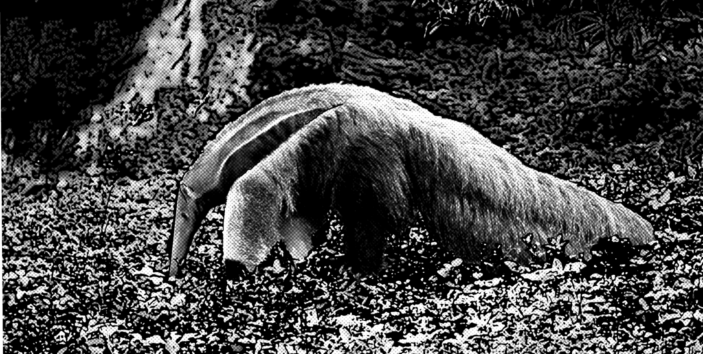
— O lobo-guará é lindo, não é? — falou Cris, radiante.
— É, tenho que dizer que o bicho é bonito mesmo. Nem dá medo de estar perto dele, apesar do tamanhão — disse, surpreendido, João Pedro.
Continuaram andando e, em pouco tempo, Paulo virou-se para os dois e abriu um sorriso de vitória enquanto afastava, delicadamente, uma moita de capim já bastante alta. Lá estava o tamanduá-bandeira, dormindo sob a sombra não muito densa de um jacarandá. Estava deitado, encolhido, com sua grande cauda peluda dobrada por cima do corpo como se fosse um cobertor. Em silêncio, admiraram o bicho por algum tempo. Cris tirou fotos. Finalmente partiram, deixando o animal dormindo em paz.
Ela estava animada por ter realizado seu desejo.
— Ficar mais perto que isso do bicho seria impossível!
Página 86
— É, Paulo, você é mesmo bom nisso — reconheceu João Pedro, admirado.
Já era mais de meio-dia e fazia muito calor, quando decidiram parar para comer alguma coisa. Como era um lugar de vegetação bastante aberta, sentaram-se sob a reduzida sombra de uns pequenos arbustos. Paulo havia trazido algumas espigas de milho e João Pedro surpreendeu a todos com alguns jatobás.
— Catei ali por perto enquanto vocês tiravam fotos do tamanduá.
Cris nunca havia comido aquilo. Era uma espécie de vagem ou fava de casca bem dura e grossa. Paulo pegou uma pedra e quebrou a casca de um dos frutos. Tirou uma porção da polpa, que era uma massa verde um tanto seca, e deu para Cris provar. Ela achou o cheiro estranho, mas experimentou e gostou. João Pedro lembrou que era um alimento muito forte. Comeram todos os jatobás, mas depois quase acabaram com a água de tanta sede que deu.
Após a pequena refeição, esticaram-se para descansar um pouco. João Pedro deitou-se com a barriga para cima e a cabeça apoiada nos braços. Estava quase cochilando quando Cris perguntou:
— Cadê o Paulo?
De fato, ele tinha sumido. Era estranho, pois estava por ali poucos momentos antes.
— Deve ter ido ao banheiro — sugeriu João Pedro.
Cris concordou com a sugestão e voltou a se deitar.
Poucos minutos depois, lá vinha Paulo carregando algo. Era um tatu! Paulo o segurava pela cauda, mas dava para ver que o bicho estava bem vivo, porque se mexia bastante. Os dois levantaram rapidamente.
Página 87
— Que tal este wanã-höbe que achei? — falou Paulo.
— Bom, eu chamo isso de tatupeba — disse João Pedro.
— Como é que você o achou aqui no meio do nada? — perguntou Cris.
Antes que Paulo respondesse, João Pedro brincou:
— Como assim no meio do nada, Cris? O tatu mora aqui!
O que ela quis dizer era que naquele lugar aparentemente árido não parecia ser fácil encontrar animais como aquele tatu que Paulo tinha nas mãos. De qualquer forma, ficou envergonhada com a pergunta um tanto boba que fizera. Paulo explicou o caso:
— Eu tinha ido “ao banheiro” e, quando me abaixei, vi este tatu fazendo um buraco quase no meu lado. Daí, trouxe ele pra comer depois.
— Oba, adoro tatu! – disse João Pedro.
Cris impacientou-se:
— Assim não é possível! Estou até conformada em ter comido carne dos veadinhos e entendi a importância da caça para vocês.
E, fuzilando João Pedro com os olhos, continuou:
— Para eles, xavante, o senhor não está incluído.
E, agora mais calma, voltando-se para Paulo:
— Mas não precisa matar todo animal que passa pela sua frente. Será que não dá para apenas observá-los de vez em quando? Como fizemos com o lobo e com o tamanduá...
Os rapazes ficaram quietos. Haviam sido surpreendidos por aquele discurso de Cris. Entreolharam-se e, em poucos segundos, lá ia o tatu caminhando de volta para seu buraco sob o olhar satisfeito da garota.
Um pouco mais a frente, tiveram que atravessar uma área recém-queimada.
Página 88
A paisagem era sombria com vários troncos secos e queimados, com o chão coberto por cinzas. Ao passar por ali, as roupas deles ficaram cheias de riscos pretos do carvão vindo dos ramos secos. Cris quis saber como aquilo havia acontecido, e Paulo respondeu que um grupo xavante havia caçado por ali dois dias atrás. A área atingida pelo fogo era grande, e o impacto, incontestável.
— Não daria para rever esse método de vocês caçarem? – questionou Cris.
— Isto está assim porque o fogo foi recente, mas, daqui a algumas chuvas, as plantas brotam novamente – quis explicar Paulo, um pouco constrangido. Ainda assim — continuou — todos os animais mortos foram comidos e os outros fugiram na hora do incêndio.
— Nem todos... — interrompeu João Pedro, diante de um animal morto, do tamanho aproximado de um porco, e bastante queimado.
Era um filhote de anta. Com seu focinho mole, como uma pequena tromba, e o corpo marrom listrado de branco, era um bichinho extremamente simpático e indefeso. Cris até chorou com aquela cena, que fez Paulo pensar sobre a pergunta da garota.
De fato, um dos temas mais debatidos no warã, nos últimos tempos, era o desaparecimento dos animais. Estava ficando difícil caçar. A cada nova caçada tinham que ir a locais mais distantes para encontrarem animais para serem abatidos. Naqueles mesmos locais onde ele costumava ir caçar com seus familiares havia alguns anos, agora quase não se viam rastros. A carne de caça era muito importante para um povo caçador, como os xavante, e, por isso, precisavam encontrar um modo de entender o que estava acontecendo.
Página 89
Muito se dizia sobre o avanço do desmatamento e o crescimento das produções agrícolas ao redor das reservas indígenas, mas talvez os seus companheiros de viagem também tivessem alguma razão e o jeito de caçar precisasse ser revisto.
Continuaram a jornada em silêncio até sair da área queimada. Passaram a uma região com um Cerrado mais alto, com mais sombra, mas, àquela altura, o calor estava insuportável.
— Estou derretendo... — dramatizou João Pedro.
Cris nem falava mais, completamente molhada de suor e com o rosto bem vermelho do sol.
— Olha, não sei se vai atrasar nossa volta, mas se quiserem, posso levar vocês a uma cachoeira aqui perto — propôs Paulo, também sentindo os efeitos do calor, mas sobretudo com pena do estado dos outros dois.
Toparam no ato. Mudaram um pouco a direção e logo a trilha ficou mais inclinada. Às vezes precisavam segurar em raízes e troncos de plantas para descer as partes mais acidentadas. Passaram por dentro de uma pequena mata, já ouvindo o barulho da água. Não demorou muito e lá estava diante deles uma bela queda-d’água de uns seis metros. Na parte baixa, um poço profundo perfeito para dar umas braçadas. Depois, a água seguia por um riacho com corredeiras menores e muitas pedras. Foram chegando e entrando imediatamente na água.
— Está bem fria! Mas, depois do primeiro mergulho fica uma delícia — disse Cris.
Paulo boiava no poço, sorria e abria a boca, deixando a água entrar por ela. João Pedro o imitou:
— É, Cris, aproveita pra fazer isso por aqui. Não sei como estão os rios de lá de onde você vem, mas pelo que ouvi falar a coisa tá feia.
Página 90
Dessa vez ela teve de concordar com João Pedro. Infelizmente já não era em qualquer lugar que se podia beber água dos rios daquele jeito. Passaram um bom tempo na cachoeira, nadando e fazendo hidromassagem sentados nas corredeiras e também em pé sob a queda-d’água principal. Depois deitaram nas pedras para esquentar o corpo, olhando o céu e ouvindo o barulho da água, dos pássaros e do vento no mato.
Os três estavam deitados, cada um em uma pedra, quando Cris sentiu algo a atingindo bem de leve. Sentou-se rapidamente, pensando ser uma abelha ou outro inseto, mas não viu nada. Voltou a deitar, e logo sentiu a mesma coisa de novo e não tardou a sentir ainda mais uma vez. Já estava incomodada quando ouviu Paulo dizer:
— E depois tem gente que acha que o indígena é que é bobo...
Nisso, João Pedro não aguentou e começou a rir. Era ele mesmo que estava jogando pedrinhas pequenas em Cris havia vários minutos.
Paulo se levantou de repente para dar mais um mergulho, quando escorregou e caiu, apoiando todo o corpo em um dos braços. Cris e João Pedro prontamente tentaram ajudá-lo a se levantar, mas Paulo gritou quando pegaram na sua mão esquerda.
— Acho que caí de mau-jeito e torci o pulso.
A dor era mesmo intensa. Com calma, João Pedro tentou examinar o braço de Paulo:
— Pelo jeito não quebrou. Você só torceu. Ainda bem que eu trouxe arnica.
— Você tem uma pomada com você? — perguntou Cris, referindo-se a certas pomadas usadas em contusões, vendidas em farmácias.
Página 91
O rapaz explicou que arnica era uma planta do Cerrado muito usada como remédio para várias ocasiões, e principalmente em casos de dores provocadas por pancadas. Não era uma planta muito comum na região onde viviam, mas dona Antônia sempre tinha na sua horta, e em casa sempre havia vidrinhos com uma mistura de arnica e álcool que era tiro e queda. Ele rasgou um pedaço da sua camiseta e colocou uma faixa embebida em arnica no braço de Paulo. O problema era manter o braço fixo para não forçar o pulso. Foi a vez de Cris improvisar uma tala usando um pedaço da haste da enorme folha de um buriti.
— Taí mais uma função para o buriti, a planta de mil utilidades! — disse Cris após concluir o curativo.
Paulo sorriu e agradeceu a ajuda, embora ainda sentisse muita dor.
— É melhor ficarmos por aqui ao menos por essa noite, para que Paulo se recupere um pouco — sugeriu João Pedro. — Afinal, agora teremos que subir a trilha de volta, e ele não vai conseguir com o braço desse jeito.
Não era a ideia inicial, mas todos concordaram que era a coisa mais certa a fazer naquele momento. À noite, ficaram estirados numa esteira improvisada com folhas de buriti. Naqueles dias passados por ali, Cris ainda não havia parado para admirar o céu durante a noite. Aliás, nunca tinha visto um céu tão estrelado, e sentiu falta de conhecer melhor as constelações, pois naquela noite deveria dar para ver várias delas. Então, ficou ali admirando o céu e inventando constelações. De repente, interrompeu o silêncio com uma pergunta complicada:
— Vocês acreditam em vida em outros planetas?
Seguiu-se um profundo silêncio. Depois de alguns minutos, João Pedro falou, sem convicção:
Página 92
— Acho que não. É difícil...
— E você, Paulo? — quis saber Cris.
Paulo pensou um bocado antes de responder:
— Não sei, pode até ter. Mas cada vez fico mais preocupado é com a nossa vida neste planeta aqui.
— Tem razão — concordou Cris —, existe tanta coisa maravilhosa que a gente nem conhece...
João Pedro completou, de modo um tanto confuso:
— Não é só conhecer. Às vezes, a gente até conhece, ou acha que conhece, mas quando vê direito, as coisas são diferentes daquilo que a gente achava que eram...
— Lá onde eu moro, a gente é muito apressada ou distraída no dia a dia. Vê as coisas, mas não enxerga a beleza que há por trás delas. Acho que é por isso que não damos valor a elas — comentou Cris, como que se tivesse entendido o que João Pedro queria dizer.
Paulo não disse mais nada, e parecia estar com o pensamento muito longe dali.
Os três ficaram acordados até bem tarde, admirando o céu e partilhando aquele momento especial em contato com a noite.
Página 93
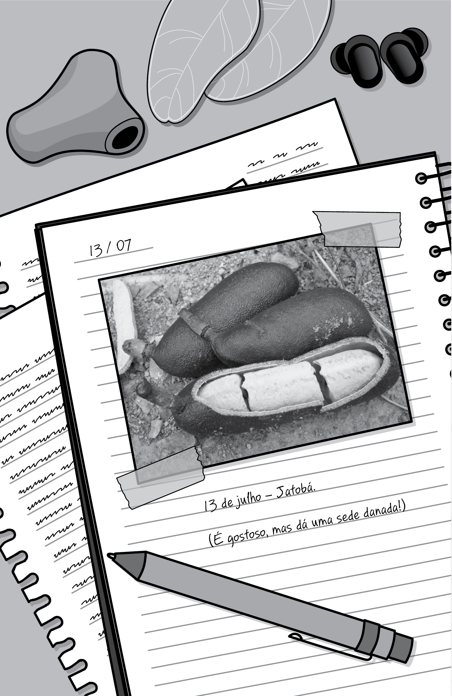
Página 94
12.
a folia
Página 95
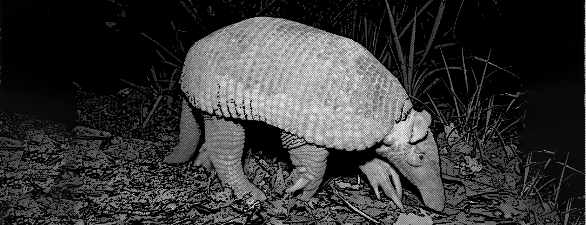
Já era madrugada quando João Pedro acordou ouvindo um barulho estranho. Havia algum animal nas proximidades. Ele ouvia uns passos apressados que, de repente, paravam, e depois, recomeçavam. O bicho estava mesmo por perto. Resolveu acordar Cris, levando o dedo aos lábios e pedindo silêncio, antes que ela espantasse o animal sem querer. Meio zonza de sono, Cris entendeu os sinais do rapaz e os dois levantaram-se lentamente. O barulho agora vinha de trás de uma árvore, no meio do capim alto. Aproximaram-se na ponta dos pés, mas João Pedro pisou num galho seco no chão, produzindo um estalo. Pararam. Dava para ouvir a respiração do bicho, que fez um barulho como se tivesse soprado com força todo o ar de seus pulmões de uma só vez. Com o coração disparado, Cris olhou para João Pedro e contaram nos dedos: um, dois, três e... saltaram!
Página 96
Passaram para o outro lado da árvore e deram de cara com um tatu. Mas, dessa vez, não era um tatu qualquer — era um tatu enorme! Por alguns segundos o bicho olhou para eles, levantou a cabeça e farejou o ar, depois deu as costas e saiu em disparada. Os dois ficaram imóveis, como em estado de choque. Depois começaram a gritar:
— Vimos o canastra! Vimos o canastra!
Deitado, Paulo nem se mexeu e apenas resmungou: “Tudo isso por causa de um tatu?”.
Depois daquilo, os dois demoraram a dormir novamente. Quando finalmente conseguiram, já estava perto de amanhecer. Paulo acordou com o sol nascendo, mas deixou os dois dormirem um pouco mais. O braço ainda estava dolorido, mas tinha melhorado bastante e já poderiam sair dali.
Depois de certa hora, Paulo viu-se obrigado a acordar os dorminhocos. Precisavam começar a voltar se quisessem chegar ao acampamento naquele mesmo dia. João Pedro aplicou mais arnica no braço de Paulo e logo iniciaram a caminhada. A subida foi um tanto demorada, pois Paulo precisou de ajuda em vários trechos. Quando finalmente terminaram de subir e retomaram o caminho de volta para o acampamento, Paulo avisou:
— Agora não podemos mais nos distrair se quisermos chegar ainda hoje!
Andaram por um bom tempo em ritmo mais acelerado e em silêncio, para economizar as energias. Estavam quase deixando o território xavante, faltando apenas passar por um pequeno rio que demarcava o limite das terras indígenas. Paulo parecia bem recuperado, pois andava rápido, deixando os dois um pouco para trás.
Página 97
Do alto de um morro avistaram um pequeno acampamento ao longe, nas margens do córrego. Cris comemorou:
— Olha lá! São eles, chegamos finalmente!
Paulo já ia bem à frente e estava quase ao lado da barraca, quando Cris e João Pedro viram, de longe, saírem dois homens estranhos e armados, o que finalmente os fez compreender que aquele não era o acampamento deles. Os homens eram garimpeiros, e andavam naquela região procurando um local para se estabelecerem. Anos atrás tinha sido descoberto ouro naquelas bandas, mas poucos se atreviam a explorá-lo, com receio dos xavante. Diante do susto do encontro repentino, apontaram as armas para Paulo, que parou, levantando os braços:
— O que é que você quer aqui, índio? — perguntou um dos homens, bastante mal-encarado.
O outro, mais baixo e com um bigode farto, nem deixou Paulo falar, dizendo em tom agressivo:
— Essas não são as suas terras! Não queremos problemas com vocês!
Somente nesse momento é que perceberam a presença de Cris e João Pedro, parados a alguns metros dali. Com um movimento da espingarda o homem de bigode mandou que se aproximassem, enquanto ironizava:
— Não sei quem são vocês, mas para estarem acompanhando esse índio, não devem ser boa coisa...
Sem saber direito o que fazer ou dizer, os dois foram lentamente se aproximando até ficarem ao lado de Paulo. Um enorme cachorro preto, preso a uma árvore por uma corrente, latia e pulava na direção deles. Estavam sem ação, com os olhares divididos entre o cachorro e as armas apontadas para eles.
Página 98
Os homens também estavam confusos com a presença daqueles jovens em seu acampamento e decidiram colocar os três dentro da barraca, enquanto pensavam no que fariam com eles. Em silêncio, os três se sentaram na barraca observando, pela fresta da entrada, os dois homens armados conversando lá fora, e o cachorro, que os mantinha sob a mira de seus olhos ferozes.
Os três estavam muito assustados e certamente pensando no pior. Cris olhava para seus novos amigos e parecia não acreditar no que estava acontecendo. Ninguém tinha coragem de dizer uma só palavra.
De repente, viram chegar um terceiro homem, também armado com um facão na cintura. Não era possível entender o que estavam falando, mas parecia que os outros dois estavam contando o acontecido para o que havia chegado. Enquanto falavam, os três homens gesticulavam bastante e, de vez em quando, olhavam para a barraca. Nessas horas, os três desviavam o olhar, fingindo não acompanhar cada movimento daqueles homens. Finalmente, o último homem a chegar fez uma expressão muito séria, como se tivesse acabado de tomar uma decisão. Conversaram mais um pouco e vieram, decididos, na direção dos três jovens. Desesperada, Cris apertou as mãos e não pôde deixar de pensar: “Agora é o fim.”.
O terceiro homem chegou à frente dos outros, e em total silêncio olhou atentamente para cada um dos três jovens. Foi aí que aconteceu o que ninguém mais esperava. O garimpeiro coçou o queixo e virou-se para João Pedro:
— Ei, você não é o filho do Mílton?
Ainda apavorado, ele confirmou com a cabeça.
— Pois o que estão fazendo por aqui? Vão pra casa que tem um mundo
de gente desesperada atrás de vocês.
Página 99
Pela manhã, eu os encontrei perto daqui, seguindo o rio — disse o homem, que ainda perguntou, olhando para Paulo com desconfiança, se estava tudo bem com João Pedro e Cris.
Cris pegou Paulo pela mão e o puxou delicadamente para que saíssem logo da barraca. Os três homens os olharam com ar de surpresa e reprovação. Era como se estranhassem aquela moça da cidade ser tão amiga daquele “índio”. Cris ficou indignada e ao mesmo tempo sem ação diante do preconceito daquelas pessoas. Queria dizer várias coisas, mas não conseguiu falar uma só palavra. Tudo o que queria naquele momento era sair dali. Explicaram que estava tudo bem, afinal. Foram liberados e deixaram o local em silêncio.
Perto dali, na casa em ruínas, havia um acampamento com quase 20 pessoas, cachorros e mais dois veículos. Mílton tinha convocado toda a vizinhança para as buscas, que tinham sido incessantes naqueles dias. As pessoas estavam começando a ficar desanimadas e se preparavam para mais uma noite de sofrimento quando os três surgiram na estrada. Beto, Cris, Mílton e João Pedro se abraçaram. Os pais não quiseram ouvir as explicações que os dois jovens tentavam dar. A alegria pela volta era muito grande. O clima era de felicidade e alívio e, só algum tempo depois, se deram conta da presença de Paulo, deslocado em um canto mais afastado. Cris e João Pedro o buscaram e o apresentaram. Ele também foi abraçado por Beto que lhe agradeceu por tê-los trazido em segurança.
Mílton fez questão de que Paulo os acompanhasse até a fazenda. Depois o levaria de volta com o jipe. Paulo não teve como recusar o convite e embarcou junto.
Quando chegaram à fazenda, foi um misto de alegria e alívio.
Página 100
— Onde já se viu? Ficar tantos dias sem notícias! — suspirava dona Antônia enquanto abraçava o filho.
Mílton contava para Cris das buscas que tinham feito em toda a região com a ajuda dos vizinhos. Mais tranquilo e refeito do susto, Beto agora queria ouvir detalhes da aventura. Enquanto tomavam café, os três se revezavam ao contar a história. Lá pelas tantas, Mílton chamou dona Antônia e anunciou:
— Mande chamar os músicos, que hoje vai ter folia!
Cris e Paulo se entreolharam sem entender.
Ele se referia à Folia de Reis, uma festividade típica do interior, especialmente da região onde ele tinha nascido, em Minas Gerais. A folia era uma festa católica, originalmente comemorada no Dia de Reis, na primeira semana de janeiro, que retratava o encontro dos Reis Magos com o Menino Jesus. Havia música, oração, comidas típicas e leilões para arrecadar dinheiro para alguma obra assistencial. Porém, em alguns locais, a folia era convocada em qualquer época do ano como forma de agradecer a alguma promessa ou pedido alcançado. E aquela era, sem dúvida, uma boa ocasião para Mílton e dona Antônia agradecerem a volta dos meninos em segurança.
Logo a vizinhança foi chegando e a casa de Mílton ficou cheia. A pequena sala não comportava mais ninguém. Lá estavam Beto, Cris, Paulo, a família anfitriã, os violeiros uniformizados e tantas outras pessoas. Do lado de fora ainda havia um monte de gente ouvindo a cantoria. Terminada a parte religiosa da festa, começou a comilança. Havia bolotas de carne com pão e tutu de feijão entre outras delícias preparadas no fogão a lenha. Tudo estava muito gostoso e Paulo comeu até quase não aguentar mais.
Página 101
— Vocês sabem mesmo fazer uma festa! — exclamou enquanto se preparava para atacar mais um pão com carne.
— Eu também estou achando tudo ótimo. Eta, povo animado! — vibrava Cris.
Dona Antônia, Mílton e Beto admiravam os três jovens que passaram toda a festa juntos, como amigos de longa data.
A festança entrou pela noite adentro. Já era bem tarde quando o último vizinho se despediu de um Mílton satisfeito pela festa e pela volta do filho.
Páginas 102 e 103
![Imagem. Fotomontagem em preto e branco, referente às páginas 102 e 103. À esquerda há ilustração de um álbum de fotos, duas lanças e um álbum aberto com o texto: 13 de julho – Banho de rio. Sem comentários. Fotografia de um grande paredão rochoso com uma cachoeira e um rio em frente. Fotografia de um rio com pedras em seu curso e vegetação ao fundo. À direita, ilustração de brincos de folhas, folhas, uma caneta e um álbum de fotos aberto com o texto: 13 de julho – Cerrado queimado. Fotografia de um campo de terra com árvores com folhas secas. 13 de julho – Não perturbe. Tamanduá dormindo. Fotografia de um tamanduá com focinho comprido e fino deitado em meio às folhas secas. Fim da imagem.](../resources/images/image_PG_PNLD27_EM_OUTROS_500_i009.png)
Página 104
13.
Três
corações
brasileiros
Página 105
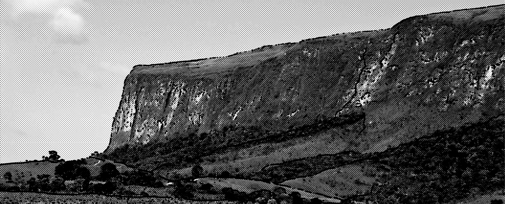
Somente no dia seguinte, Cris se lembrou de falar para Beto que havia conseguido uma foto do tatu-canastra. Não tinha ficado excepcional porque foi à noite e o animal estava de costas, mas dava para ver perfeitamente que era um canastra. Beto sorriu e respondeu:
— Naquele mesmo dia à tarde, o bicho apareceu e até que eu consegui fazer umas fotos razoáveis.
Ela fez uma expressão de quem se conformava com a derrota. Quando o pai dizia que as fotos eram razoáveis era porque eram sensacionais. Era melhor considerar essa aposta perdida.
A manhã foi de despedidas. Cris e Beto pegariam a estrada de volta para casa e Paulo retornaria à aldeia com Mílton. Apesar da alegria da festa no dia anterior, o clima já era de saudades. Dona Antônia não continha as lágrimas.
Página 106
Cris estava emotiva e impressionada com o carinho e simplicidade das pessoas que conheceu. “Como pode ser isso? Eu passei apenas uma semana por aqui e já me tratam como se eu fosse um parente querido que vai embora”, pensava.
Despediu-se de cada um com abraços demorados. Por último, abraçou e beijou João Pedro e Paulo, que disseram quase ao mesmo tempo:
— Boa viagem, Cris. Volte logo!
A moça sorriu, acenou e sentou-se no carro com o coração apertado. Aqueles dias tinham sido realmente especiais. Os três certamente voltariam a se encontrar muitas outras vezes. Na cabeça de cada um deles passavam lembranças daqueles momentos vividos juntos, e também vários projetos para o futuro. Paulo estava mais do que nunca decidido a ser professor e ajudar a fortalecer cada vez mais a cultura do seu povo, mas agora veria com outros olhos a possibilidade de aproximação de alguns warazu. Aqueles dois novos amigos eram um bom exemplo da possibilidade da convivência entre diferentes culturas. João Pedro já havia começado a rever várias de suas opiniões em relação aos animais, às pessoas da cidade e, sobretudo, aos xavante. Também estava pensando no futuro. Talvez devesse mesmo retomar os estudos e cursar a faculdade naquela cidade. Quem sabe o curso de Biologia?
Cris tinha visto, em poucos dias, partes de um país até então desconhecido por ela. Conheceu pessoas e lugares que jamais imaginara que pudessem ser tão importantes para ela. Enquanto o carro avançava na estrada, várias profissões passavam pela sua cabeça. Com o vento nos cabelos e um sorriso estampado no rosto, Cris não havia conseguido decidir ainda qual profissão seguiria, mas o mais importante é que agora ela começara a descobrir quem realmente queria ser.
Página 107
Para dar jeito nesse mundo, havia muito a ser feito, e ela já começava a imaginar como fazer sua parte.
Olhando para a filha, Beto ficou feliz em perceber que a viagem acabara sendo ótima para ela. Passou a mão por seus cabelos e quis saber no que ela estava pensando. Cris apenas sorriu para o pai, beijou seu rosto como se agradecesse a oportunidade daquela aventura, e voltou a sonhar com o futuro. Agora, por detrás daqueles óculos escuros, havia um par de olhos com um brilho especial.
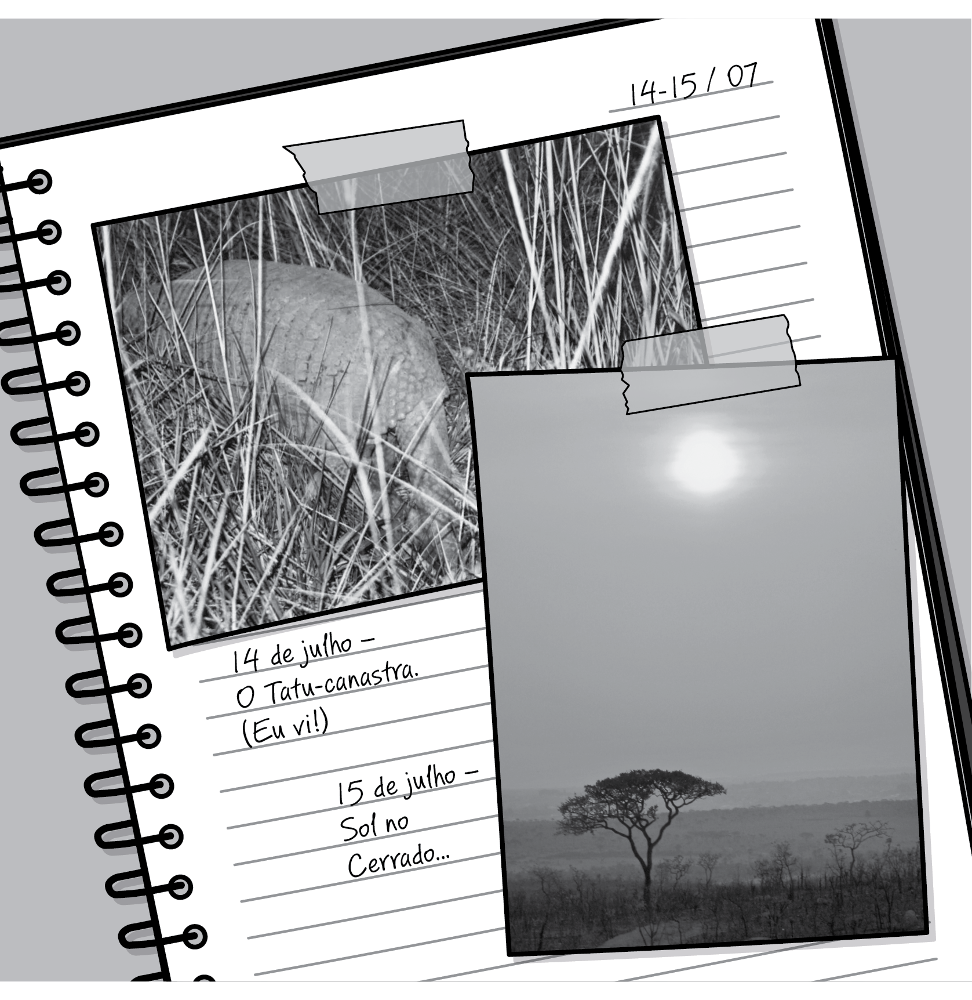
Página 108
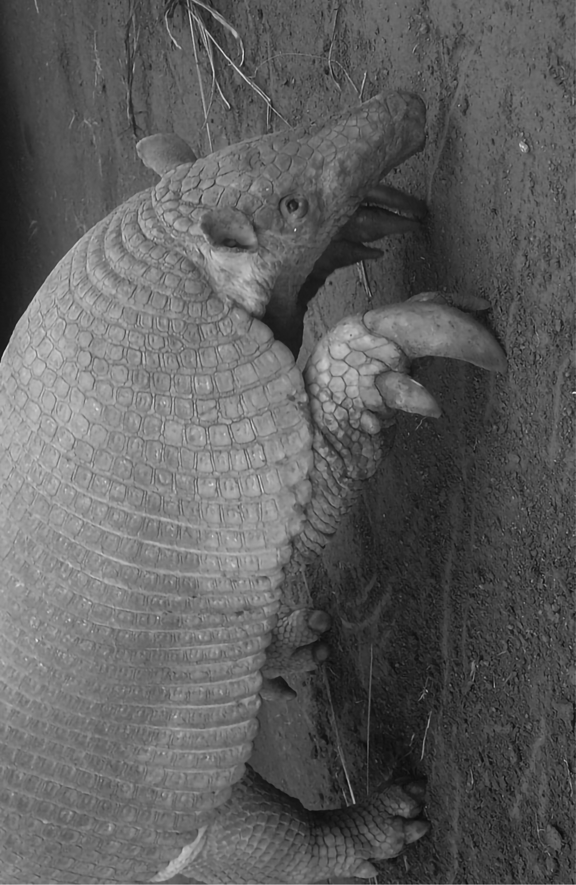
Página 109
o tatu–canastra
Tatu é uma palavra de origem tupi, e descreve as cerca de oito espécies de mamíferos sul-americanos da família Dasypodidae, como os tatupeba, tatu-galinha, tatu-de-rabo-mole, tatu-bola, tatu-canastra, tatu-verdadeiro e outros. O tatu-canastra é o maior dos tatus viventes. Mede até 95 cm de comprimento e pode pesar até 50 quilos. No meio científico é conhecido pelo nome de Priodontes maximus e na língua xavante é chamado de wanã-wawé, que significa tatu-grande. Pouco se sabe sobre seu comportamento. É solitário e sua atividade é principalmente ao entardecer e durante a noite, apesar de poder, eventualmente, ser avistado durante o dia. Sua alimentação predileta são cupins e formigas, mas também come frutos, raízes e outros pequenos animais. E encontra-se em diversas localidades da América do Sul, mas está seriamente ameaçado de extinção, devido à caça e à destruição do ambiente onde vive — as florestas e savanas, como o Cerrado, que aparentemente é seu local preferido.
Página 110
O autor
Nasci em Brasília, cercado de Cerrado por todos os lados. Ao prestar vestibular, decidi ser biólogo e passei boa parte da minha vida de estudante e, depois, de profissional, em atividades de pesquisa de campo, estudando animais e plantas do Cerrado. Em 1993, tive a oportunidade de conhecer a aldeia xavante de Pimentel Barbosa, em Mato Grosso. Desde aquele ano, amadureço a ideia de contar de alguma forma as experiências fascinantes que tive em contato com brasileiros tão ilustres e, ao mesmo tempo, tão diferentes desses que eu, pessoa criada na cidade grande, conhecia até então.
Depois, comecei a me interessar também pela incrível riqueza cultural do Brasil, e terminei por descobrir que não se pode (nem se deve) separar a natureza da cultura. Tanto as riquezas naturais quanto as culturais estão entre as principais preciosidades do nosso país, e a preservação de ambas é fundamental para a nossa sobrevivência como povo, como nação.
Nos últimos anos tenho lidado muito de perto com as dificuldades e dúvidas de jovens em relação às suas escolhas profissionais e à visão de futuro. Então, escrevi esse livro pensando nisto: em descrever a emoção de encontrar cara a cara com os nossos bichos e plantas do Cerrado, que é tão belo, porém malvisto e pouco conhecido por tantos brasileiros; em falar da beleza e da diversidade das nossas manifestações culturais e do potencial que temos se nos unirmos pelo bem comum e para buscar o melhor para o nosso país; em dizer que acho que uma mesma profissão pode ser exercida de modos inteiramente diferentes, pois depende de cada pessoa decidir quem quer ser no mundo.
Página 111
Lembro até hoje de uma vinheta que passava na televisão quando eu era garoto e que dizia que “a vida tem a cor que a gente pinta”. De fato, é isso mesmo, não concorda?
Quero aproveitar para agradecer a Bia e a Lísia pelas contribuições fundamentais a este livro.
Espero que você tenha gostado de ler esta história, assim como eu gostei de escrevê-la.
Marcelo Bizerril
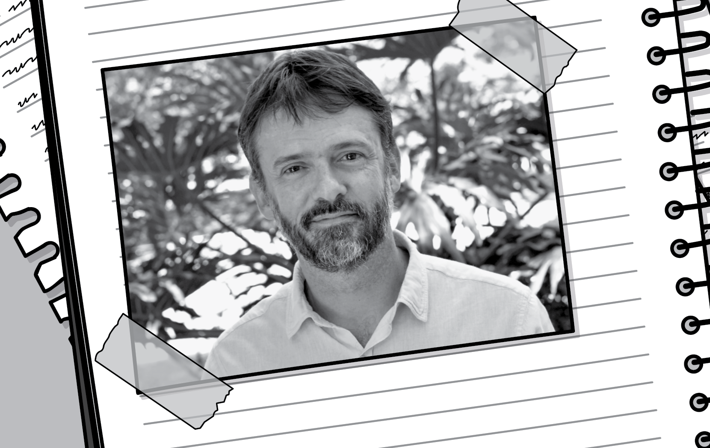